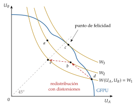
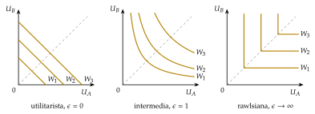
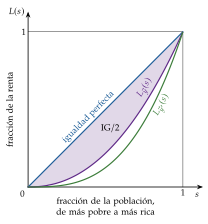
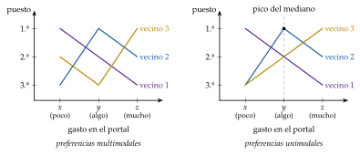
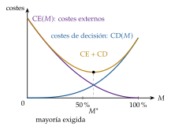
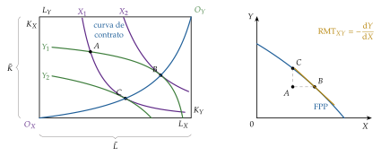
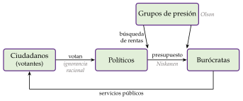

Tema 3.A.24
Economía del bienestar (III). Las funciones de bienestar social. Teoría de la elección colectiva. El teorema de imposibilidad de Arrow y desarrollos posteriores.
Teorema de imposibilidad de Arrow, funciones de bienestar social (Harsanyi, Rawls), Atkinson y Gini, votante mediano, Borda y Gibbard-Satterthwaite.
Introducción
Enganche:
«Nunca llueve a gusto de todos», dice el refrán. ¿Puede una sociedad decidir de forma coherente cuando sus miembros quieren cosas distintas?
En diciembre de 2023, un solo Estado miembro bloqueó en el Consejo Europeo la revisión del marco financiero plurianual de la Unión, que incluía 50.000 millones de euros para Ucrania. El reglamento del marco financiero exige unanimidad en el Consejo (Unión Europea, 2016), y hubo que convocar otra cumbre: el 1 de febrero de 2024, los 27 jefes de Estado o de Gobierno llegaron a un acuerdo (Consejo Europeo, 2024).
Con unanimidad, cualquiera bloquea; con mayoría, la minoría pierde y, como veremos, la mayoría puede no saber qué quiere. ¿Existe alguna regla que deje contentos a todos?
Relevancia:
Teórica: la economía del bienestar es la parte normativa de la microeconomía, que estudia las decisiones de consumidores y productores.1 Tiene 2 funciones (Koutsoyiannis, 1979):2
juzgar qué situaciones de la economía son mejores para la sociedad, entendiendo cada situación como un reparto de los recursos entre usos y de la renta entre personas;
dar normas de política económica que lleven a los estados socialmente preferidos.
Las 2 exigen agregar: pasar de lo que quiere cada uno a lo que conviene a todos. Toda política (un impuesto, un gasto, una regulación) mejora a unos y empeora a otros, y elegir entre ellas exige un criterio.
De política económica: para Atkinson, el gran teórico de la desigualdad del siglo XX, la economía no existe solo para describir el comportamiento humano y satisfacer la curiosidad de los economistas, sino para recomendar, diseñar y valorar políticas que mejoren la vida de los ciudadanos (Jimeno, 2017a; Atkinson, 2009). Por eso pidió que la economía del bienestar volviera «a un lugar destacado en la agenda de los economistas» y ocupara «un papel central en la enseñanza de la economía» (Atkinson, 2011, 157), tras su «extraña desaparición» (Atkinson, 2001).
Es una de las partes del análisis económico más reconocidas: los premios Nobel de Arrow (1972), Buchanan (1986), Sen (1998) y Hurwicz, Maskin y Myerson (2007) premian aportaciones que se estudian en esta exposición (The Nobel Prize, 1972, 1986, 1998, 2007).
Contextualización:
Desde un punto de vista histórico:
Los mercantilistas asociaban el bienestar del país a sus metales preciosos, y Smith (1776), al producto anual. A finales del siglo XVIII, Bentham (1789) identifica el bienestar con la utilidad (utilitarismo) y el bienestar social con la suma de las utilidades individuales.
Los marginalistas de los años 70 del siglo XIX introducen la utilidad marginal decreciente (Jevons, 1871; Menger, 1871; Walras, 1874). La tradición utilitarista inglesa la usa para defender que redistribuir del rico al pobre aumenta la utilidad total: con utilidades cardinales, comparables e iguales para todos, maximizar la suma pide igualar las rentas (Edgeworth, 1897), y Pigou (1920) hace de la distribución una parte de la economía del bienestar. Marshall (1890) mide además el bienestar en dinero con el excedente del consumidor.3
Pareto (1906) prescinde de la utilidad cardinal y propone un criterio que solo exige saber si cada individuo mejora o empeora, y Robbins (1932) declara que las comparaciones interpersonales de utilidad no son ciencia, sino juicios de valor; con ellas cae el argumento redistributivo (Robbins, 1935, 120-25). Sin comparaciones, el criterio de Pareto es el único que queda, y es incompleto: no ordena los infinitos óptimos.
En los años 30 y 40, la nueva economía del bienestar busca ordenar esos óptimos por 2 vías: los criterios de compensación (Kaldor, 1939; Hicks, 1939; Scitovsky, 1941) y la función de bienestar social (FBS) de Bergson (1938) y Samuelson (1947): una función de las utilidades individuales que resume unos juicios de valor sobre el reparto. En los 50 llega la teoría del second best (Lipsey y Lancaster, 1956) [ver tema 3.A.22].
En 1951, Arrow recupera un problema que habían planteado Borda (1781) y Condorcet (1785), cómo votar, y funda la teoría de la elección colectiva (o social): el estudio de cómo agregar las preferencias de los individuos en una decisión o una ordenación de la sociedad y de qué propiedades tienen las distintas reglas. Su teorema de imposibilidad demuestra que ninguna regla basada solo en las ordenaciones de los individuos cumple unas condiciones mínimas (Arrow, 1951).4
Después vienen los desarrollos posteriores: el votante mediano (Black, 1948), la caracterización de la mayoría (May, 1952), la elección pública (Buchanan y Tullock, 1962), la obra de Sen (1970a), la manipulación estratégica (Gibbard, 1973; Satterthwaite, 1975) y la vuelta a las FBS con información más rica sobre el bienestar (d’Aspremont y Gevers, 1977).
Desde un punto de vista teórico, la exposición cierra el bloque del bienestar: tras caracterizar los óptimos y su relación con el mercado [ver tema 3.A.22] y los fallos de mercado [ver tema 3.A.23], pregunta cómo elegir entre los óptimos y cómo decide la sociedad.
Problemática:
¿Cómo elegir entre los infinitos óptimos de Pareto? ¿Qué juicios de valor exige y cómo se mide la desigualdad que penalizan?
¿Existe una regla que agregue las preferencias de los individuos en una ordenación social razonable?
Si no existe, ¿a qué condición conviene renunciar y con qué coste? ¿Qué cambia si cada uno puede mentir sobre sus preferencias?
Estructura:
La exposición tiene 3 bloques, con el teorema de imposibilidad de Arrow como eje:
partimos de la incompletitud del criterio de Pareto y de las 2 respuestas de la nueva economía del bienestar, la compensación y la función de bienestar social, para llegar a la teoría de la elección colectiva y al teorema de Arrow (bloque I);
estudiamos después los desarrollos posteriores, que llamaremos escapatorias al teorema. La primera rechaza su metodología y vuelve a las funciones de bienestar social con juicios de valor explícitos: sus propiedades, sus formas (utilitarista, rawlsiana e intermedias) y la medida de la desigualdad que penalizan (bloque II);
la segunda acepta la metodología y renuncia a alguno de los axiomas: las reglas de votación, lo que cuesta cada renuncia y los problemas de información (bloque III).
Las funciones de bienestar social de Bergson (1938) y Samuelson (1947) son anteriores a Arrow, pero las desarrollamos después: tras el teorema se convierten en una de sus salidas, y sus desarrollos (Harsanyi, Rawls, Atkinson, Sen) son posteriores a 1951.
Decir en voz alta, al dar la estructura, por qué la función de bienestar social va después de Arrow.
3.A.24. Economía del bienestar (III)
Introducción: el veto en el Consejo Europeo; «nunca llueve a gusto de todos»
I. Teoría de la elección colectiva y teorema de imposibilidad de Arrow
1. Contexto: incompletitud del criterio de Pareto (compensación y FBS)
2. Teorema de Arrow (1951): \(R_G=f(R_1,\dots,R_I)\); U, T, P, I, D; votante pivote
3. Valoración y escapatorias
II. Primera escapatoria: las funciones de bienestar social
1. Rechazo de la metodología (Little, Bergson; Kemp y Ng)
2. FBS de Bergson y Samuelson: \(W(U_1,\dots,U_I)\), bases informativas, punto de felicidad, equidad y eficiencia
3. Valores éticos: utilitarismo (Harsanyi), Rawls y la familia isoelástica (\(\epsilon\))
4. Criterios equitativos: Lorenz, Gini y Atkinson; ultimátum y dictador; Sen
5. Valoración
III. Segunda escapatoria: levantamiento de los axiomas
1. Aceptación de la metodología: teorema de May
2. Renuncia a U (Condorcet, Black), a la IAI (Borda, intercambio de votos), a T, P o D (oligarquía, Sen); otras reglas (Buchanan y Tullock)
3. Problemas de información: Gibbard-Satterthwaite y diseño de mecanismos
Conclusión
Reparto del cante: introducción, 2′30″; I, 8′30″ (I.1, 1′30″; I.2, 6′; I.3, 1′); II, 9′ (II.1, 1′; II.2, 3′; II.3, 2′; II.4, 2′30″; II.5, 0′30″); III, 9′ (III.1, 0′45″; III.2, 6′45″; III.3, 1′30″), y conclusión, 1′.
La pizarra, en 3 zonas fijas durante todo el cante. A la izquierda, la columna de los 5 axiomas de Arrow (U, T, P, I, D), que se escribe en el apartado I.2 y a la que en el I.3 se añade, junto a cada uno, su salida en una palabra (tabla 1); en los bloques II y III se marca cada salida al tratarla. En el centro, los gráficos, que se borran al acabar cada bloque. A la derecha, las funciones clave, que se quedan hasta el final: la regla de agregación (2), la función de bienestar social (3) y la familia isoelástica (5), con los refranes que se van diciendo.
Los ejemplos: en el bloque I, una comunidad de 3 vecinos que vota cuánto gastar en reformar el portal ilustra cada axioma, y es la misma que vuelve en el bloque III; en el bloque II, los 2 individuos \(A\) y \(B\) de la gran frontera de posibilidades de utilidad.
Los gráficos imprescindibles son la columna de axiomas con sus salidas, la función de bienestar social sobre la gran frontera (gráfico 1), las 3 formas de las curvas de indiferencia social (gráfico 2), la curva de Lorenz (gráfico 3) y las preferencias de Condorcet (gráfico 4). La demostración completa del teorema de Arrow, las bases informativas y la elección pública van en los anexos y no se cantan.
I. Teoría de la elección colectiva y teorema de imposibilidad de Arrow
En el cante (8′30″):
Contexto (1′30″): en el centro, solo los ejes \(U_A\), \(U_B\) y la gran frontera de posibilidades de utilidad, que se quedan hasta el bloque II; Pareto y los teoremas, de palabra, en 5 frases; la compensación y la FBS, en una frase cada una. Las curvas de indiferencia social no se dibujan todavía.
Teorema (6′): es el centro del tema y conviene detenerse. A la derecha, \(R_G=f(R_1,\dots,R_I)\) recuadrada; a la izquierda, la columna U, T, P, I, D, explicando cada axioma con la comunidad de vecinos (2′30″); el enunciado y los 3 pasos de la idea de la prueba (1′30″), y la pérdida de información como razón última.
Valoración (1′): el teorema es constructivo; junto a cada axioma, su salida en una palabra.
Idea: este bloque plantea el problema central de la exposición: cómo pasar de las preferencias de los individuos a las de la sociedad. Partimos de por qué hace falta (el criterio de Pareto no basta) y llegamos al teorema de Arrow.
Conclusión anticipada: con 3 alternativas o más, ninguna regla que use solo las ordenaciones de los individuos cumple a la vez 5 condiciones mínimas de racionalidad y democracia; toda regla razonable sacrifica alguna.
I.1. Contexto en el que surge el teorema de Arrow: la incompletitud del criterio de Pareto
I.1.1. Criterio de Pareto
Un estado es un óptimo de Pareto si no se puede mejorar a nadie sin empeorar a otro.5 El criterio descansa en 4 juicios de valor (individualismo, no paternalismo, benevolencia e independencia del proceso) y es ordinal: no compara utilidades entre personas [ver tema 3.A.22].
En el modelo 2×2×2×2, los óptimos igualan las relaciones marginales de todos los agentes en la producción, en el consumo y entre ambos, \[\tag{1} \mathrm{RMST}^X_{LK}=\mathrm{RMST}^Y_{LK},\qquad \mathrm{RMS}^A_{XY}=\mathrm{RMS}^B_{XY}=\mathrm{RMT}_{XY},\] y forman la gran frontera de posibilidades de utilidad (GFPU), la envolvente de las fronteras de posibilidades de utilidad de cada punto de la frontera de posibilidades de producción. La construcción, paso a paso, está en el anexo A.
Con mercados competitivos completos, el equilibrio es un óptimo: es el primer teorema fundamental de la economía del bienestar (1TFEB). Con convexidad y transferencias de suma fija, cualquier óptimo puede alcanzarse como equilibrio: es el segundo teorema fundamental de la economía del bienestar (2TFEB) [ver tema 3.A.22].
Pero el criterio es incompleto: deja sin ordenar los infinitos puntos de la GFPU. La optimalidad de Pareto es necesaria, pero no suficiente, para maximizar el bienestar social.
Y el 2TFEB hace la pregunta ineludible: si cualquier óptimo es alcanzable, ¿cuál elegir?
I.1.2. Criterios adicionales para resolver el problema de incompletitud
En los años 30 y 40, la nueva economía del bienestar busca ordenar los óptimos por 2 vías:
la neoparetiana de la London School of Economics, con los criterios de compensación: un cambio es una mejora si los ganadores podrían compensar a los perdedores y seguir ganando (Kaldor, 1939; Hicks, 1939). Pero la compensación potencial encierra una comparación interpersonal implícita (si no se paga, los perdedores pierden de verdad), y los criterios pueden contradecirse (Scitovsky, 1941) [ver tema 3.A.22];
la neoutilitarista de Harvard, que hace explícita esa comparación: la función de bienestar social de Bergson (1938) y Samuelson (1947), \(W(U_1,\dots,U_I)\), elige entre los óptimos con juicios de valor (bloque II).
Arrow cambia la pregunta: en lugar de proponer una \(W\) con juicios de valor, se pregunta si puede salir de las preferencias de los individuos.
Dibujar solo la GFPU; las curvas de indiferencia social se añaden en el bloque II.
I.2. Teorema de imposibilidad de Arrow (1951)
a) Idea
Kenneth Arrow, en Social Choice and Individual Values (Arrow, 1951), cambia radicalmente el enfoque.6 En lugar de proponer una función de bienestar social con unos juicios de valor, pregunta qué condiciones debería cumplir cualquier procedimiento razonable para pasar de las preferencias de los individuos a las de la sociedad, y si existe alguno que las cumpla.
2 rasgos definen su enfoque:
solo usa ordenaciones: ni intensidades ni comparaciones entre personas, como pedía Robbins;
es axiomático: hace con la elección colectiva lo que Debreu (1959) hará con la elección individual.
La pregunta es antigua. A finales del siglo XVIII, Borda propuso puntuar a los candidatos según su puesto en la ordenación de cada votante, y Condorcet (1785), compararlos por parejas por mayoría; y Condorcet descubrió que la mayoría puede no ser transitiva (apartado III.2.1). Arrow generaliza el problema a cualquier regla.
Para seguir el razonamiento usaremos un ejemplo sencillo.
Pensemos en una comunidad de 3 vecinos que debe decidir cuánto gastar en reformar el portal: poco (\(x\)), algo (\(y\)) o mucho (\(z\)). Cada vecino ordena las 3 opciones, y la comunidad necesita una regla que convierta esas 3 ordenaciones en una sola.
b) Modelo
i) Supuestos
Un número finito de individuos, \(i=1,\dots,I\), y un conjunto de alternativas (estados sociales) con al menos 3 elementos, \(x\), \(y\), \(z\)…
Inputs: cada individuo tiene una ordenación \(R_i\) de las alternativas, con una relación de preferencia \(\succsim_i\) completa, reflexiva y transitiva, como en la teoría del consumidor [ver tema 3.A.8]; \(\succ_i\) es la preferencia estricta y \(\sim_i\), la indiferencia. Todos ordenan el mismo conjunto de alternativas, y un perfil es la lista de las \(I\) ordenaciones.
Output: una regla de agregación asigna a cada perfil una ordenación social \(R_G\), con su relación \(\succsim_G\):7
\[R_G=f(R_1,R_2,\dots,R_I)\tag{2}\]
Se le piden 5 condiciones, que Arrow considera mínimas:
(U) Dominio universal: la regla está definida para cualquier perfil de ordenaciones individuales. Da generalidad: el mecanismo debe agregar cualesquiera preferencias.
En la comunidad de vecinos: la regla tiene que funcionar tanto si el vecino 3 prefiere los extremos (mucho o poco) a la opción intermedia como si no.
(T) Transitividad: la ordenación social es completa y transitiva, \[x\succsim_Gy\ \ \text{y}\ \ y\succsim_Gz\ \Rightarrow\ x\succsim_Gz.\]
En la comunidad de vecinos: si la comunidad prefiere algo a poco y mucho a algo, debe preferir mucho a poco.
(P) Pareto débil: si todos prefieren \(x\) a \(y\), la sociedad también,8 \[x\succ_iy\ \ \forall i\ \Rightarrow\ x\succ_Gy.\] Asegura que el resultado sea eficiente.
En la comunidad de vecinos: si los 3 prefieren gastar algo a gastar poco, la comunidad también.
(I) Independencia de las alternativas irrelevantes (IAI): la ordenación social entre \(x\) e \(y\) depende solo de cómo ordena cada individuo \(x\) e \(y\), no de dónde coloca otras alternativas.9 Formalmente, para 2 perfiles cualesquiera, \(\{R_i\}\) y \(\{R'_i\}\), \[\big(x\succsim_iy\iff x\succsim'_iy\big)\ \ \forall i\ \Rightarrow\ \big(x\succsim_Gy\iff x\succsim'_Gy\big).\] Impide usar información sobre otras alternativas, como la distancia que separa a \(x\) de \(y\) en la ordenación de cada uno.
En la comunidad de vecinos: para decidir entre gastar poco o algo no debe importar dónde coloca cada vecino la opción de gastar mucho.
(D) No dictadura: no hay ningún individuo \(d\) tal que, para todo perfil y todo par de alternativas, \(x\succ_dy\Rightarrow x\succ_Gy\). Nadie controla el mecanismo de elección.
En la comunidad de vecinos: el presidente no puede imponer siempre su orden.
ii) Desarrollo: el teorema y la idea de la prueba
Teorema de imposibilidad de Arrow: con al menos 3 alternativas y un número finito de individuos, no existe ninguna regla de agregación que cumpla a la vez U, T, P, I y D. Dicho al revés: toda regla que cumpla U, T, P e I es una dictadura.10
Idea de la prueba (Geanakoplos, 2005), en 3 pasos (desarrollo completo en el anexo B):
Extremos: si todos ponen una alternativa \(y\) en un extremo de su ordenación (la primera o la última), la sociedad también la pone en un extremo. Si no, la IAI y la transitividad chocarían con Pareto.
Votante pivote: partimos de un perfil en el que todos ponen \(y\) la última (por Pareto, la sociedad también) y la subimos al primer puesto de un individuo en un individuo. Al final, \(y\) es la primera para todos y para la sociedad. Por el paso 1, en algún momento salta de golpe del último puesto social al primero: el individuo \(n\) que la sube en ese momento es pivote.
El pivote es un dictador: con la IAI se construyen perfiles en los que la ordenación social de cualquier par depende solo de la de \(n\). Contradice D.
«Donde hay patrón no manda marinero», dice el refrán: el teorema muestra que, si se exigen U, T, P e I, siempre hay un patrón.
En la comunidad de vecinos: cualquier regla que cumpla las 4 primeras condiciones acaba dando a un vecino, el pivote, la última palabra en todas las decisiones.
iii) Implicaciones
Toda regla de agregación razonable incumple alguna condición:
Quienes buscaban una única regla (dominio universal) que diera una ordenación coherente (transitividad) a partir de preferencias individuales ordinales (IAI), con un resultado eficiente (Pareto) y sin que nadie controlara el mecanismo (no dictadura) se proponían, por tanto, un imposible.
La razón última es la pérdida de información: se pasa de tantas ordenaciones como individuos a una sola, y con ordenaciones no comparables no se puede saber si lo que gana uno compensa lo que pierde otro; la IAI impide además sacar esa información de las demás alternativas.
El teorema no dice que votar sea un mal mecanismo de decisión ni defiende la dictadura: dice que toda regla tiene algún defecto, y obliga a decir cuál se acepta.
I.3. Valoración y escapatorias al teorema de Arrow
El teorema es una aportación constructiva: no cierra el debate de la elección colectiva, sino que abre una línea de análisis en la que trabajan muchos autores desde varias ópticas.
Ante el pesimismo del teorema, los desarrollos posteriores van en 2 direcciones:
los que rechazan la metodología de Arrow: vuelven a las funciones de bienestar social, con juicios de valor explícitos y comparaciones interpersonales de utilidad (bloque II);
los que la aceptan y estudian a qué axioma se puede renunciar:
al dominio universal: preferencias unimodales y votante mediano (III.2.1);
a la independencia de las alternativas irrelevantes: la intensidad de las preferencias, Borda y el intercambio de votos (III.2.2);
a la transitividad, a Pareto o a la no dictadura: oligarquías, vetos y el liberal paretiano de Sen (III.2.3);
a la mayoría simple: la unanimidad y la mayoría óptima (III.2.4);
y, cuando las preferencias son información privada, la manipulación estratégica y el diseño de mecanismos (III.3).
La tabla 1 resume cada axioma, lo que cuesta renunciar a él y dónde se estudia.
| Axioma | Qué exige | Si se renuncia a él | Dónde |
|---|---|---|---|
| (U) Dominio universal | la regla vale para cualquier perfil de preferencias | preferencias unimodales: la mayoría es transitiva y gana el votante mediano (Black, 1948) | III.2.1 |
| (T) Transitividad | una ordenación social completa y transitiva | cuasitransitividad: hay una oligarquía con veto (Sen, 1969; Gibbard, 2014) | III.2.3 |
| (P) Pareto débil | si todos prefieren \(x\) a \(y\), la sociedad también | la regla es nula, dictatorial o dictatorial inversa (Wilson, 1972); Pareto choca con la libertad (Sen, 1970b) | III.2.3 |
| (I) IAI | \(x\) frente a \(y\) depende solo de cómo ordena cada uno \(x\) e \(y\) | la intensidad cuenta: Borda, intercambio de votos; reglas manipulables | III.2.2 |
| (D) No dictadura | nadie impone siempre su ordenación | la dictadura cumple todo lo demás | III.2.3 |
| Base informativa | preferencias ordinales, sin comparaciones interpersonales | funciones de bienestar social con comparaciones (Bergson, 1938; Samuelson, 1947; Sen, 1970a) | II |
| Preferencias conocidas | la regla ve las preferencias verdaderas | si son privadas, toda regla razonable es manipulable (Gibbard, 1973; Satterthwaite, 1975) | III.3 |
Fuente: elaboración propia a partir de Inman (1987, fig. 3.6, p. 693) y Sen (1970a).
Que quede claro que Arrow no busca zanjar el debate, sino ser constructivo: de ahí los desarrollos posteriores. En la pizarra, junto a cada axioma de la columna de la izquierda, su salida en una palabra (unimodales, oligarquía, Sen, Borda, dictador, FBS).
Para ampliar: Morreau, «Arrow’s Theorem», en la Stanford Encyclopedia of Philosophy (Morreau, 2025).
Recapitulando: el criterio de Pareto no elige entre óptimos, y Arrow demuestra que ninguna regla razonable puede hacerlo a partir de ordenaciones individuales sin comparar a unas personas con otras. Pasamos a la primera escapatoria: rechazar su metodología.
II. Escapatorias al teorema de Arrow (I): las funciones de bienestar social
En el cante (9′):
Rechazo de la metodología (1′): de palabra; la tabla 2 es de profundización.
Función de bienestar social (3′): a la derecha, \(W(U_1,\dots,U_I)\) recuadrada; en el centro, sobre la GFPU del bloque I, las curvas \(W_1\), \(W_2\) y \(W_3\), el punto de felicidad \(c\) y la trayectoria \(d\to b\to e\) (gráfico 1). Las bases informativas, en una frase («la FBS no exige cardinalidad, sino comparabilidad»).
Valores éticos (2′): en el centro, las 3 formas de las curvas de indiferencia social (gráfico 2): rectas, convexas y en L; a la derecha, la familia isoelástica recuadrada.
Criterios equitativos (2′30″): la curva de Lorenz (gráfico 3) y, a la derecha, \(A_\epsilon\) con el ejemplo de 10 y 30 euros (1′15″); el ultimátum y el dictador con sus cifras (0′45″); Sen, en 2 ideas (0′30″).
Valoración (0′30″): a la izquierda, se marca «base informativa».
Idea: una vez visto que ninguna regla basada solo en ordenaciones cumple los 5 axiomas, pasamos a la primera salida: rechazar la metodología de Arrow y volver a la función de bienestar social, que es anterior al teorema.
Conclusión anticipada: la función de bienestar social completa el criterio de Pareto, pero solo a cambio de juicios de valor explícitos y de comparaciones interpersonales de utilidad. Cada forma de la función es una idea de la justicia, y cada una lleva a una medida de la desigualdad.
II.1. Idea principal: rechazo de la metodología de Arrow
Las primeras réplicas a Arrow discuten la pregunta misma: Little (1952) y Bergson (1954) sostienen que lo propio de la economía del bienestar es emitir juicios éticos sobre los estados sociales, y no diseñar un procedimiento automático para votarlos:
Para Little, un procedimiento que convierte ordenaciones en una decisión no dice nada de lo que la sociedad valora: decide, pero no juzga. La función de bienestar social es un juicio, no un procedimiento, y por eso el teorema no le alcanza.
Bergson distingue entre aconsejar a un individuo con sus propios valores, que es para él el objetivo de la economía del bienestar, y decir a un funcionario qué hacer, que es lo que hace la regla de Arrow.
La distinción es útil en la democracia deliberativa, con 2 fases:
la deliberativa, en la que cada uno forma y expresa su juicio de valor: es el terreno de la función de bienestar social;
la decisiva, en la que esos juicios se agregan para decidir: es el terreno de la regla de Arrow.
Arrow acepta que su regla es una herramienta para el funcionario, pero sostiene que esa es precisamente la pregunta central: qué debe hacer la sociedad en su conjunto.
¿Basta con un solo perfil? Samuelson (1977) replica que una función de bienestar social de Bergson y Samuelson se define para las preferencias que hay, no para todos los perfiles posibles, y que por eso el teorema no la afecta. Pero Kemp y Ng (1976) y Parks (1976) obtienen la imposibilidad con un solo perfil si se exigen condiciones de neutralidad parecidas a las de Arrow. La salida, en los 2 casos, es la misma: admitir comparaciones interpersonales (anexo C).
| Arrow | Bergson y Samuelson | |
|---|---|---|
| Objetivo común | ||
| Información | ordenaciones individuales, sin comparaciones interpersonales | utilidades comparables entre personas |
| Juicios de valor | solo los 5 axiomas, que respetan la consistencia y la coherencia de las preferencias individuales | la forma de \(W\), que incorpora una idea de la justicia |
| Dominio | todos los perfiles posibles | las preferencias que hay (un solo perfil) |
| Para quién | el funcionario que decide (fase decisiva) | quien juzga con sus valores (fase deliberativa) |
Fuente: elaboración propia a partir de Little (1952), Bergson (1954) y Sen (1970a).
II.2. Línea neoutilitarista: la función de bienestar social
a) Idea
El problema del criterio de Pareto, como vimos en el apartado I.1, es que deja infinitos óptimos sin ordenar en la GFPU, y el 2TFEB dice que cualquiera de ellos es alcanzable. Hace falta un criterio adicional.
Bergson (1938) propone, y Samuelson (1947) completa, una función que resume en un número los juicios de valor de la sociedad (o del analista) sobre el bienestar de sus miembros. El bienestar de una sociedad es una función de las utilidades de quienes la forman:11
\[W=W(U_1,U_2,\dots,U_I),\qquad U_i=U_i(\vec{x}_i),\qquad \frac{\partial W}{\partial U_i}>0\ \ \forall i\tag{3}\]
Como la regla de Arrow, tiene inputs y output: los inputs son las utilidades individuales, definidas sobre los consumos; el output, un índice de bienestar social que ordena todos los estados. \(\partial W/\partial U_i\) es la utilidad marginal social del individuo \(i\): cuánto aumenta el bienestar social si \(i\) gana una unidad de utilidad y los demás no cambian.
b) Modelo
i) Supuestos
Se piden a \(W\) unas propiedades habituales:
Individualismo (o bienestarismo): \(W\) solo depende de las utilidades, y cada uno es el mejor juez de su bienestar (no paternalismo).
Coherencia con Pareto: \(\partial W/\partial U_i>0\) para todo \(i\); si alguien mejora y nadie empeora, el bienestar social aumenta (monotonía).
Anonimato (simetría): da igual quién disfruta de cada nivel de utilidad; permutar las utilidades entre personas no cambia \(W\).
Cuasiconcavidad (aversión a la desigualdad): las curvas de indiferencia social son convexas; la media de 2 distribuciones igual de buenas es al menos tan buena como ellas.
Comparabilidad: para escribir \(W\) hay que poder comparar a unas personas con otras; qué se compara (niveles, ganancias o ambas cosas) depende de la forma de \(W\).12
Las 2 primeras son las que pide Samuelson (1947); el anonimato y la cuasiconcavidad ya son juicios de valor sobre el reparto. «Cada cabeza es un mundo», dice el refrán: comparar lo que siente cada uno es el juicio de valor que el criterio de Pareto evitaba y que la FBS hace explícito.
Medir y comparar no son lo mismo: la FBS no exige utilidades cardinales, sino comparables. Lo resume el recuadro siguiente.
Mensurabilidad y comparabilidad. Una utilidad puede ser:
ordinal (solo importa el orden; vale cualquier transformación creciente) o cardinal (importan también las diferencias; vale solo \(a_i+b_iU_i\), con \(b_i>0\));
comparable entre personas o no: se pueden comparar niveles (¿está A peor que B?), unidades o ganancias (¿gana A más de lo que pierde B?), o ambas cosas.
Las 2 dimensiones son independientes: puede haber utilidades cardinales sin comparaciones (las de von Neumann y Morgenstern [ver tema 3.A.10]) y utilidades ordinales con comparaciones de niveles (las de Rawls). Cada combinación es una base informativa (Sen, 1970a), y cada una admite unas reglas y no otras (tabla 3): cuanta más información se admite, más reglas son posibles. La imposibilidad de Arrow es, en el fondo, un problema de información.
| Base informativa | Qué se puede comparar | Transformaciones que no cambian nada | Regla resultante |
|---|---|---|---|
| Ordinal no comparable | nada entre personas | \(\phi_i(U_i)\) creciente, distinta para cada \(i\) | imposibilidad: solo la dictadura (Arrow, 1951) |
| Cardinal no comparable | nada entre personas | \(a_i+b_iU_i\), con \(b_i>0\) distintos | sigue la imposibilidad (Sen, 1970a) |
| Ordinal con comparabilidad de niveles | quién está peor | \(\phi(U_i)\) creciente, la misma para todos | maximin y leximin de Rawls (Hammond, 1976; d’Aspremont y Gevers, 1977) |
| Cardinal con comparabilidad de unidades | ganancias y pérdidas | \(a_i+bU_i\), con \(b>0\) común | utilitarismo, \(W=\sum_iU_i\) (d’Aspremont y Gevers, 1977) |
| Escala de razón con comparabilidad plena | niveles y proporciones | \(bU_i\), con \(b>0\) común | FBS homotéticas; con separabilidad, la familia isoelástica (5) (Roberts, 1980; Blackorby y Donaldson, 1982) |
Fuente: elaboración propia a partir de Sen (1970a), d’Aspremont y Gevers (2002) y Gaertner (2006, cap. 7).
ii) Desarrollo
Interpretación gráfica: con 2 individuos, \(A\) y \(B\), las curvas de nivel de \(W\) son las curvas de indiferencia social (CIS) en el plano \((U_A,U_B)\): las combinaciones de utilidades que dan el mismo bienestar social.
Son decrecientes (por Pareto), no se cortan y representan más bienestar cuanto más lejos están del origen; si hay aversión a la desigualdad, son convexas. La convexidad es un juicio de valor, no una propiedad de toda FBS: la utilitarista tiene rectas (apartado II.3).
Su pendiente, en valor absoluto, es la relación marginal de sustitución social: cuánta utilidad de \(B\) está dispuesta a sacrificar la sociedad por una unidad más de utilidad de \(A\), \[-\left.\frac{dU_B}{dU_A}\right|_{W=\overline{W}}=\frac{\partial W/\partial U_A}{\partial W/\partial U_B}.\] Con CIS convexas disminuye al bajar por la curva: cuanto más tiene \(A\), menos vale socialmente darle más.
Problema del planificador: una vez fijada la forma de \(W\), la elección social es la del planificador que maximiza el bienestar social con las restricciones de la tecnología y de los recursos, que resume la GFPU:13 \[\tag{4} \begin{array}{rl}\displaystyle \max_{U_A,U_B} & \displaystyle W(U_A,U_B) \\ \text{s.a.} & (U_A,U_B)\in\mathrm{GFPU}\end{array}\]
Como \(W\) es creciente en todas las utilidades, la solución está en la GFPU y cumple las condiciones de Pareto (1); además, la pendiente de la CIS iguala a la de la GFPU: \[\frac{\partial W/\partial U_A}{\partial W/\partial U_B}=-\left.\frac{dU_B}{dU_A}\right|_{\mathrm{GFPU}}.\]
Es el punto de felicidad (bliss point), el mejor de todos los óptimos (optimum optimorum): la tangencia de la CIS más alta con la GFPU. Como la GFPU puede tener tramos convexos, una tangencia no basta: el punto de felicidad es el máximo global de \(W\) sobre la GFPU.
Volvamos a \(A\) y \(B\) en el gráfico 1: el punto de felicidad es \(c=(5{,}39;\,4{,}89)\), donde la curva \(W_3\) toca la GFPU. Cualquier otro punto de la frontera, como \(d=(7{,}60;\,1{,}62)\), está en una curva más baja, \(W_1\).
iii) Implicaciones
Pareto es necesario, pero no suficiente: el óptimo social está en la GFPU, pero un punto ineficiente puede ser mejor que uno eficiente.
En el gráfico, el punto \(a=(3{,}4;\,5{,}29)\), por debajo de la GFPU pero en la curva \(W_2\), da más bienestar social que \(d\), eficiente pero muy desigual, en la \(W_1\); \(b=(5{,}6;\,3{,}21)\), en la misma \(W_2\), da el mismo bienestar que \(a\). Aun así, dado cualquier punto ineficiente, siempre hay uno en la GFPU que lo mejora.
Solución tecnocrática: el punto de felicidad, con los 10 valores del modelo 2×2×2×2 que lo sostienen, sale de las formas funcionales, sin precios.
Con precios y competencia perfecta, el equilibrio general competitivo es un óptimo (1TFEB), pero solo coincidirá con el punto de felicidad por casualidad.
El 2TFEB da la salida: redistribuir las dotaciones con transferencias de suma fija y dejar actuar al mercado lleva a cualquier punto de la GFPU, también al de felicidad. Separa así la eficiencia (el mercado) de la equidad (la redistribución previa).
Disyuntiva entre equidad y eficiencia: las transferencias de suma fija no existen en la práctica [ver tema 3.A.22], y los impuestos y transferencias reales distorsionan las decisiones de los agentes.
Siguiendo con \(A\) y \(B\): partimos de \(d\), muy desigual, y el Gobierno quiere llegar a \(c\), más cerca de la bisectriz y con más bienestar. Los impuestos distorsionantes no le llevan a \(c\), sino a \(b\): ineficiente, pero socialmente preferido a \(d\) (está en \(W_2\)).
Si sigue redistribuyendo, los costes de eficiencia pueden superar a las ganancias de equidad, y acabar en \(e\approx(3{,}45;\,3{,}45)\), sobre la bisectriz: más igualitario, pero en una CIS más baja que \(W_1\) (\(3{,}45^2\approx11{,}9<12{,}27\)), peor que \(b\) y aun que el punto de partida \(d\).
Es la lógica de la imposición óptima: redistribuir hasta que el beneficio social de la equidad iguale el coste de la ineficiencia [ver tema 4.B.11].

Fuente: elaboración propia a partir de Bator (1957).
c) Valoración
Ventajas:
resuelve la incompletitud: con una forma concreta, todo par de estados es comparable, también 2 en los que unos ganan y otros pierden;
es el instrumento de la economía pública cuando hay que sopesar eficiencia y equidad, como en la imposición óptima [ver tema 4.B.11].
Inconvenientes:
exige comparaciones interpersonales: Samuelson reconoce que la generalidad de las utilidades ordinales, sin comparaciones, las hace inútiles para la decisión social, donde hay que sopesar lo que gana uno frente a lo que pierde otro;
su forma es un juicio de valor: Bergson caracteriza la FBS sin proponer ninguna, y admite que cada forma incorpora, además de la eficiencia, una idea de la justicia y la equidad.
Elegir una forma exige, por tanto, juicios de valor. Es lo que hacemos a continuación.
II.3. Valores éticos subyacentes: la elección de una forma funcional
Idea: la FBS de Bergson y Samuelson no dice qué forma tiene; elegirla es elegir unos valores, y para justificarla se puede teorizar sobre qué sería lo justo en una sociedad. La filosofía política ofrece 2 extremos, el utilitarismo y el contractualismo de Rawls, y la economía, una familia de funciones que los une; la FBS con CIS convexas del apartado anterior es un caso intermedio.
II.3.1. Filosofía utilitarista: Bentham y Harsanyi
a) Idea
Es la tradición de Bentham, que Harsanyi fundamenta con la teoría de la decisión: la sociedad está mejor cuando aumenta la suma de las utilidades, de modo que un cambio que da a unos más de lo que quita a otros es una mejora, aunque el reparto empeore.
b) Modelo
i) Supuestos
Cada individuo tiene preferencias personales, basadas en sus gustos e intereses, y preferencias morales, su opinión sobre los intereses generales de la sociedad; estas son su propia FBS.
Sus preferencias personales cumplen los axiomas de la utilidad esperada de von Neumann y Morgenstern: se representan con una función de utilidad cardinal que valora cada lotería por su utilidad esperada [ver tema 3.A.10].
Para formar sus preferencias morales, el individuo elige entre situaciones sociales sin saber qué lugar ocuparía en ellas: tiene la misma probabilidad, \(1/I\), de ser cualquiera de los \(I\) miembros de la sociedad (Harsanyi, 1953).14
ii) Desarrollo
Con esa incertidumbre, el individuo elige la situación que le da mayor utilidad esperada, \(\sum_i\frac{1}{I}U_i\): la que da a los miembros de la sociedad un nivel medio de utilidad más alto.
Teorema de agregación (Harsanyi, 1955): si los individuos y la sociedad cumplen los axiomas de la utilidad esperada y la sociedad es indiferente entre 2 loterías sobre estados sociales cuando lo son todos sus miembros, la FBS es una suma ponderada de las utilidades individuales; con anonimato, la suma simple: \[W=\sum_{i=1}^{I}U_i.\]
iii) Implicaciones
Las CIS son rectas de pendiente \(-1\) (gráfico 2, panel izquierdo): las utilidades de unos y otros son sustitutivas perfectas y pesan lo mismo.
El individuo es neutral respecto a la utilidad, no respecto a la renta: la aversión al riesgo sobre la renta ya está en la concavidad de cada \(U_i\).
Por eso al utilitarismo le es indiferente el reparto de la utilidad, pero no el de la renta: si todos tienen la misma función de utilidad, cóncava en la renta \(y_i\), maximizar \(\sum_iU(y_i)\) con una renta total dada exige igualar las utilidades marginales, \(U'(y_i)=U'(y_j)\), es decir, rentas iguales (Edgeworth, 1897). Con funciones distintas, da más renta a quien mejor la convierte en utilidad.
c) Valoración
II.3.2. Filosofía rawlsiana o neocontractualismo: Rawls
a) Idea
En A Theory of Justice, Rawls (1971) renueva la tradición del contrato social de Locke, Rousseau y Kant: los principios justos son los que acordarían personas libres y racionales en una situación inicial de igualdad. El bienestar social es el del peor situado, y solo mejora si mejora él.
b) Modelo
i) Supuestos
Los individuos eligen los principios de la sociedad en una posición original, tras un velo de la ignorancia: no saben qué posición ocuparán ni qué talento o qué gustos tendrán.
Es una decisión grave e irreversible y no hay probabilidades fiables sobre la posición que tocará.
ii) Desarrollo
En esas condiciones, los individuos aplican el criterio maximin: eligen la sociedad cuyo peor resultado es el mejor. Es como una aversión infinita a la incertidumbre [ver tema 3.A.10].
De ahí sale la FBS rawlsiana, \[W=\min\{U_1,U_2,\dots,U_I\},\] y los 2 principios de la justicia.16
iii) Implicaciones
Las CIS tienen forma de L, con los vértices en la bisectriz (gráfico 2, panel derecho): el bienestar social solo aumenta si aumentan las utilidades de todos, y el óptimo social es de igualdad de utilidades.
Leximin: el maximin ignora a todos menos al peor situado. Su versión lexicográfica, si 2 estados empatan en el peor, mira al segundo peor, y así sucesivamente; cumple Pareto en sentido fuerte (Sen, 1970a; Hammond, 1976).
c) Valoración
Desde el utilitarismo, Harsanyi (1975, 595-97) le reprocha que el maximin lleva a decisiones absurdas: es una regla extrema, que rechaza una ganancia enorme para casi todos para evitar una pérdida mínima del peor situado.
Nozick (1974) le opone una teoría de la justicia histórica, la de los títulos: una distribución es justa si nace de adquisiciones y transferencias justas, sea cual sea su forma, y ningún patrón final, tampoco el de Rawls, puede imponerse sin violar derechos. Rawls, en cambio, sostiene que en la distribución inicial pesan mucho las diferencias de capacidades naturales y de condiciones sociales, que nadie ha merecido.
II.3.3. La familia isoelástica: del utilitarismo a Rawls
a) Idea
Los 2 extremos son casos de una sola familia de funciones, con un parámetro de aversión a la desigualdad, \(\epsilon\geq0\) (Atkinson, 1970). Así, elegir una FBS es elegir un número.
b) Modelo
i) Supuestos
Utilidades positivas y comparables entre personas en una escala de razón (tabla 3), y anonimato.
ii) Desarrollo
La función de bienestar social isoelástica es
\[W=\sum_{i=1}^{I}\frac{U_i^{1-\epsilon}}{1-\epsilon}\quad(\epsilon\neq1),\qquad W=\sum_{i=1}^{I}\ln U_i\quad(\epsilon=1)\tag{5}\]
La pendiente de sus CIS es \(dU_B/dU_A=-(U_B/U_A)^{\epsilon}\): vale \(-1\) en la bisectriz y las curvas son más curvas cuanto mayor es \(\epsilon\).
iii) Implicaciones
Con \(\epsilon=0\), es la utilitarista (rectas).
Con \(\epsilon=1\), la de Bernoulli y Nash, que ordena los estados como el producto de las utilidades (curvas convexas).
Con \(\epsilon\to\infty\), se acerca a la rawlsiana (forma de L).

Fuente: elaboración propia a partir de Mas-Colell, Whinston y Green (1995, párr. 22.C).
c) Valoración
Ordena el debate: entre Harsanyi y Rawls no hay 2 mundos, sino un parámetro, y discutir sobre la justicia distributiva es discutir el valor de \(\epsilon\).
Pero no dice qué valor elegir: sigue siendo un juicio de valor. Lo que sí permite es medir lo que cuesta, en renta, la desigualdad que penaliza cada \(\epsilon\), que es lo que hace Atkinson.
II.4. Justificación de criterios equitativos y de justicia
Hemos visto que Rawls propone un reparto más igualitario con una lógica de justicia bajo incertidumbre. La metáfora del velo es útil en teoría, pero ¿cómo se justifica incluir criterios de equidad y de justicia en la elección social?
Una vez elegida una forma funcional con argumentos éticos, quedan 3 preguntas, y cada autor responde a una: ¿cómo se mide la desigualdad que penaliza cada función? (Atkinson); ¿le importa de verdad el reparto a la gente? (la evidencia experimental); ¿bastan las utilidades para juzgar el bienestar? (Sen).17
II.4.1. Anthony Atkinson: la medida de la desigualdad
a) Idea
Para Atkinson, el criterio de Pareto lleva un juicio de valor implícito: acepta como dada la distribución de los recursos y no valora la distancia entre unos y otros. Una ordenación social debe tener en cuenta la desigualdad, y medirla sin juicios de valor no es posible: todo índice de desigualdad lleva dentro una FBS (Atkinson, 1970).
b) Modelo
i) Supuestos
\(I\) individuos con rentas \(y_1,\dots,y_I\) y renta media \(\overline{y}\).
Una FBS utilitarista sobre una utilidad de la renta igual para todos, creciente y cóncava; en el índice de Atkinson, isoelástica, con la misma \(\epsilon\) que la familia (5).
ii) Desarrollo
La curva de Lorenz, \(L(s)\), da la parte de la renta total que recibe la fracción \(s\) más pobre de la población, con \(s\in[0,1]\). Con igualdad perfecta es la diagonal; cuanto más se aleja de ella, más desigualdad (gráfico 3).
El índice de Gini mide esa distancia: es el doble del área entre la diagonal y la curva, \[\tag{6} \mathrm{IG}=1-2\int_0^1L(s)\,ds,\qquad 0\leq\mathrm{IG}\leq1.\]
Dominancia de Lorenz (Atkinson, 1970): si la curva de una distribución \(\vec{y}\) está siempre por encima de la de otra \(\vec{y}'\) con la misma media, \(L_{\vec{y}}(s)\geq L_{\vec{y}'}(s)\) para todo \(s\), toda FBS utilitarista con utilidad creciente y cóncava prefiere \(\vec{y}\). Con medias distintas, el resultado vale para la curva de Lorenz generalizada, \(\overline{y}\,L(s)\) (Shorrocks, 1983).
Si las curvas se cortan, unas FBS prefieren una distribución y otras la otra: ordenarlas exige elegir una. El índice de Atkinson hace explícita esa elección. La renta equivalente igualmente distribuida, \(y_{EDE}\), es la renta que, dada a todos por igual, daría el mismo bienestar que la distribución observada:
\[A_\epsilon=1-\frac{y_{EDE}}{\overline{y}},\qquad y_{EDE}=\left[\frac{1}{I}\sum_{i=1}^{I}y_i^{1-\epsilon}\right]^{\frac{1}{1-\epsilon}}\quad(\epsilon\neq1)\tag{7}\]
Con \(\epsilon=1\), \(y_{EDE}\) es la media geométrica de las rentas.

Fuente: elaboración propia a partir de Lambert (2001, cap. 2).
iii) Implicaciones
\(A_\epsilon\) es la parte de la renta que la sociedad estaría dispuesta a sacrificar para repartir el resto por igual. Cuanto mayor es \(\epsilon\), más pesa la parte baja de la distribución, y el país con más desigualdad en ese tramo sale con un índice peor.
Con 2 personas que ganan 10 y 30 euros (\(\overline{y}=20\)): con \(\epsilon=0\), \(y_{EDE}=20\) y \(A_0=0\); con \(\epsilon=1\), \(y_{EDE}=\sqrt{300}\approx17{,}3\) y \(A_1\approx0{,}13\); con \(\epsilon=2\), \(y_{EDE}=15\) y \(A_2=0{,}25\), y con \(\epsilon\to\infty\), \(y_{EDE}=10\) y \(A_\infty=0{,}5\).
A diferencia del de Gini, el índice de Atkinson es normativo: cada \(\epsilon\) es una FBS.
c) Evidencia empírica
En España, el índice de Gini de la renta disponible equivalente fue de 30,8 (en la escala de 0 a 100) en la Encuesta de Condiciones de Vida de 2025, con las rentas de 2024 (Instituto Nacional de Estadística, 2026), por encima de la media de la Unión Europea, 29,2 (Eurostat, 2026). La desigualdad en España, con datos, y la medida del efecto redistributivo del presupuesto se estudian aparte [ver tema 4.A.3] [ver tema 4.B.3].
d) Valoración
Convierte el debate sobre la justicia en un número comparable entre países y en el tiempo, y deja a la vista el juicio de valor que el índice de Gini esconde.
Pero el resultado depende de \(\epsilon\), que no sale de los datos, y se apoya en la utilidad de la renta: a la pregunta de si al ciudadano le importa de verdad el reparto responde la evidencia experimental.
Sobre Atkinson y la desigualdad: Lucai, «Tony Atkinson nos deja una frontera más» (Lucai, 2017); Jimeno, «Professor Sir Tony Atkinson: la tenaz lucha contra la desigualdad», 1.ª parte (Jimeno, 2017a) y 2.ª parte (Jimeno, 2017b); Llobet, «Desigualdad, movilidad e innovación» (Llobet, 2016); Bentolila, «La desigualdad en perspectiva histórica comparada» (Bentolila, 2014).
II.4.2. Evidencia experimental: los juegos del ultimátum y del dictador
Para Kahneman, Knetsch y Thaler (1986, S285), «la ausencia de consideraciones de justicia y lealtad en la teoría económica estándar es uno de los contrastes más llamativos entre esta teoría y las demás ciencias sociales, y también entre la teoría económica y las intuiciones de la gente sobre el comportamiento humano».18 Ya Smith (1759) subrayaba que la conducta humana se interesa por la suerte de los demás. La economía experimental lo ha medido con 2 juegos.
Juego del ultimátum (Güth, Schmittberger y Schwarze, 1982): un jugador propone cómo repartir una cantidad, por ejemplo 10 euros, y el otro acepta o rechaza; si rechaza, ninguno cobra.
Con jugadores que solo miran su dinero, el juego se resuelve por inducción hacia atrás: el equilibrio de Nash perfecto en subjuegos es ofrecer lo mínimo y aceptarlo [ver tema 3.A.14].
En el laboratorio, la oferta media es del 40 % y se rechaza el 16 % de las ofertas, más cuanto más pequeñas son (Oosterbeek, Sloof y Kuilen, 2004).
Caben 2 lecturas: el proponente es egoísta y ofrece mucho por miedo al rechazo, o tiene un sentido de la justicia.
Juego del dictador (Forsythe et al., 1994): el mismo, pero el segundo jugador no puede rechazar. Separa la justicia del miedo al rechazo.
Las ofertas bajan: los dictadores dan de media el 28 % de la dotación, más de un tercio no da nada y solo uno de cada 6 reparte a medias (Engel, 2011).
Lectura: a la gente le importa el reparto (si no, nadie daría nada), pero menos de lo que sugiere el ultimátum: buena parte de su generosidad es miedo al rechazo. Las preferencias por la equidad existen y justifican que la FBS no sea neutral ante la desigualdad [ver tema 3.A.1].
Queda la pregunta de cómo introducir en la función de utilidad el altruismo, la generosidad, la envidia o la aversión a la desigualdad, y si la utilidad es lo que hay que mirar. Es la que aborda Sen.
II.4.3. Crítica de Amartya Sen a las funciones de bienestar social
La obra de Sen es extensa y técnica. En el cante bastan 2 ideas: la utilidad no basta para juzgar el bienestar (capacidades) y la imposibilidad de ser liberal y paretiano a la vez (apartado III.2.3).
Amartya Sen critica que la FBS sea bienestarista (welfarist): juzga los estados solo por las utilidades, y la utilidad es mala medida del bien de una persona (Sen, 1979).19
Propone juzgar por las capacidades: la libertad real de cada uno para lograr funcionamientos valiosos (estar bien alimentado, sano, instruido, participar en la vida de la comunidad). Con la misma renta, una persona enferma logra menos (Sen, 1985).
Distingue así el bienestar como utilidad (welfare) de la calidad de vida o el bien-estar (well-being), más amplio. Su consecuencia práctica más conocida es el índice de desarrollo humano del Programa de las Naciones Unidas para el Desarrollo, publicado desde 1990, que combina renta, salud y educación (Programa de las Naciones Unidas para el Desarrollo, 1990).
Por otro lado, Sen (1970a) muestra que dejar las preferencias ordinales y admitir comparaciones interpersonales amplía de forma interesante las reglas de agregación posibles; con utilidades cardinales pero no comparables, la imposibilidad sigue (tabla 3). Hacen falta, pues, juicios de valor que vayan más allá de Pareto.
II.5. Valoración de las funciones de bienestar social
En este bloque hemos estudiado la primera escapatoria al teorema de Arrow: rechazar su metodología. La FBS no busca agregar de forma mecánica las preferencias individuales, sino medir el bienestar social con juicios de valor explícitos, y la mayoría de las propuestas muestran una preocupación por la equidad (CIS convexas).
Ventajas: resuelven la incompletitud, y son el instrumento con el que la economía pública sopesa eficiencia y equidad: imposición óptima [ver tema 4.B.11], redistribución [ver tema 4.B.3] y evaluación de proyectos [ver tema 4.B.6].
Inconvenientes:
necesitan comparaciones interpersonales, que los ordinalistas rechazan (tabla 3);
su forma es un juicio de valor, y cada una incorpora una idea distinta de la justicia;
¿de quién son esos juicios: del analista, del planificador o de la sociedad? Si son de la sociedad, hay que obtenerlos de las preferencias de sus miembros, y volvemos al problema de Arrow.
Recapitulando: la FBS elige entre óptimos a cambio de comparar a unas personas con otras, y Atkinson convierte esa comparación en un parámetro, \(\epsilon\). Pasamos a la segunda escapatoria, la que acepta la metodología de Arrow y estudia qué axioma sacrificar cuando la sociedad tiene que decidir votando.
III. Escapatorias al teorema de Arrow (II): levantamiento de los axiomas
En el cante (9′):
Aceptación de la metodología (0′45″): de palabra; el teorema de May, en una frase con sus 4 condiciones.
Renuncia al dominio universal (2′45″): en el centro, la tabla de los 3 vecinos (tabla 4) y el ciclo (1′); la agenda en una frase; el panel izquierdo del gráfico 4 y, al cambiar al vecino 3, el derecho, con el pico del mediano (0′45″); supuestos y resultado del votante mediano (0′45″); Bowen, Downs-Hotelling y varias dimensiones, una línea cada uno. A la izquierda, se marca U.
Renuncia a la IAI (1′30″): el ejemplo de Borda en 3 líneas (tabla 5), con «Cada maestrillo tiene su librillo» a la derecha; el intercambio de votos, de palabra, con los números de los vecinos. Se marca I.
Renuncia a T, P o D (1′15″): de palabra; el ejemplo del libro de Sen con sus 3 preferencias sociales escritas en una línea. Se marcan T, P y D.
Otras reglas (1′15″): boceto de los costes de Buchanan y Tullock (gráfico 5; si falta tiempo, de palabra) y las mayorías de la Constitución y de la comunidad de vecinos.
Problemas de información (1′30″): el enunciado de Gibbard-Satterthwaite y sus 2 salidas; el diseño de mecanismos en una frase.
Idea: una vez vista la primera escapatoria, que rechaza el planteamiento de Arrow, pasamos a la segunda: aceptarlo y, como la sociedad tiene que decidir de todos modos, elegir qué axioma sacrificar.
Conclusión anticipada: cada renuncia tiene un coste. Restringir las preferencias salva a la mayoría, pero no recoge la intensidad; recoger la intensidad invita a mentir; debilitar la transitividad crea grupos con veto, y cuando las preferencias son privadas toda regla razonable es manipulable.
III.1. Idea principal: aceptación de la metodología de Arrow
Se acepta el teorema y su marco: preferencias ordinales, sin comparaciones interpersonales. Pero la sociedad necesita tomar decisiones, y lo hace votando: una regla de votación es una regla de agregación concreta.
Aceptado el teorema, la pregunta es qué condición sacrificar y qué se pierde. Inman (1987, fig. 3.6, p. 693) lo resume en 3 caminos:
renunciar a Pareto: ineficiencia asignativa, porque se pueden elegir estados que todos rechazarían;
renunciar al dominio universal, a la IAI o a la transitividad: ineficiencia en la decisión, con reglas que a veces no deciden, dependen del orden de votación o se pueden manipular;
renunciar a la no dictadura: dictadura.
Solo los 2 primeros caben en una democracia, y lo más razonable es renunciar a las condiciones más débiles, el dominio universal y la IAI, y conservar Pareto, la transitividad y la no dictadura. Entre ellos se mueven los desarrollos que siguen, con la mayoría simple como regla de referencia.
El teorema de May
a) Idea
Antes de levantar ningún axioma conviene ver por qué la mayoría simple es la regla de referencia. Con solo 2 alternativas no puede haber ciclos, y la mayoría funciona.
b) Modelo
Resultado: para decidir entre 2 alternativas, una regla es la mayoría simple si y solo si cumple 4 condiciones (May, 1952):
decisión universal: da un resultado (una ganadora o un empate) para cualquier conjunto de votos;
anonimato: no importa quién vota qué, solo cuántos;
neutralidad: trata igual a las 2 alternativas;
respuesta positiva: si hay empate o gana una alternativa y alguien cambia su voto a favor de ella, pasa a ganar o sigue ganando.
c) Valoración
Es un resultado de posibilidad: justifica la mayoría como regla democrática cuando se vota entre 2 opciones (un sí o un no, 2 candidatos). Pero otros conjuntos de axiomas no han resuelto el problema general: con 3 alternativas o más, la mayoría tropieza con Arrow.
III.2. Levantamiento de los axiomas
Recorremos los axiomas de la columna uno a uno: qué regla aparece al renunciar a cada uno y qué cuesta.
III.2.1. Renuncia al axioma de dominio universal
La paradoja de Condorcet
a) Idea
Condorcet (1785) defiende comparar las alternativas por parejas, por mayoría, y descubre que, aunque cada individuo tenga preferencias transitivas, la preferencia de la mayoría puede no serlo. Es el problema que generaliza Arrow.
b) Modelo
Volvamos a la comunidad de 3 vecinos que decide cuánto gastar en reformar el portal: poco (\(x\)), algo (\(y\)) o mucho (\(z\)). Sus ordenaciones son las de la tabla 4, y votan por parejas con mayoría simple.
\(x\) gana a \(y\) (vecinos 1 y 3); \(y\) gana a \(z\) (vecinos 1 y 2), y \(z\) gana a \(x\) (vecinos 2 y 3).
Cada vecino es transitivo, pero la comunidad no: \(x\succ_Gy\succ_Gz\succ_Gx\). No hay ganador de Condorcet, la alternativa que gana a todas las demás por parejas.
| Vecino | 1.ª | 2.ª | 3.ª |
|---|---|---|---|
| 1 | \(x\) (poco) | \(y\) (algo) | \(z\) (mucho) |
| 2 | \(y\) (algo) | \(z\) (mucho) | \(x\) (poco) |
| 3 | \(z\) (mucho) | \(x\) (poco) | \(y\) (algo) |
Fuente: elaboración propia a partir de Condorcet (1785) y Mueller (2003, cap. 5).
Manipulación de la agenda: si se vota por eliminación (la que pierde sale), gana siempre la alternativa que entra en la última votación, así que quien fija el orden de votación fija el resultado.21
Por qué ocurre: las alternativas tienen un orden natural, de menos a más gasto, y el vecino 3 prefiere los extremos al centro: tiene 2 picos (gráfico 4, panel izquierdo). Sus preferencias son multimodales.
c) Valoración
Hay 3 formas de romper el ciclo:
que todos tengan las mismas preferencias: entonces no haría falta votar;
fijar un orden de votación: decide quien controla la agenda;
restringir el dominio a preferencias unimodales: es la salida de Black (1948).

Fuente: elaboración propia a partir de Black (1948).
Preferencias unimodales: el teorema del votante mediano
a) Idea
La paradoja solo aparece con algunos perfiles. Si se excluyen, renunciando al dominio universal, la mayoría vuelve a ser transitiva.
Las preferencias son unimodales (de un solo pico) si las alternativas se pueden ordenar en una línea (de menos a más gasto, de izquierda a derecha) y cada votante tiene una favorita y prefiere menos cuanto más se aleja de ella.
b) Modelo
i) Supuestos
Alternativas en una sola dimensión.
Preferencias unimodales.
Número impar de votantes.
Votación por parejas con mayoría simple y voto sincero.
ii) Desarrollo
Teorema del votante mediano (Black, 1948, 1958): la alternativa favorita del votante mediano, el que deja la mitad de los picos a cada lado, gana por mayoría a cualquier otra. Es el ganador de Condorcet, y la mayoría es transitiva.
En la comunidad de vecinos: basta con que el vecino 3 pase a \(z\succ y\succ x\) (gráfico 4, panel derecho). Los picos son \(x\), \(y\) y \(z\); el vecino 2 es el mediano, y su favorita, \(y\), gana a \(x\) (vecinos 2 y 3) y a \(z\) (vecinos 1 y 2).
iii) Implicaciones
La mayoría vuelve a dar una ordenación transitiva: se cumplen T, P, IAI y D a costa de U.
La teoría de la votación gana capacidad de predicción, porque basta conocer al votante mediano.
c) Extensiones
Competencia electoral: con 2 partidos que solo buscan votos en una dimensión ideológica, los 2 convergen hacia el votante mediano (Hotelling, 1929; Downs, 1957). Es la ciudad lineal con precios fijos de Hotelling [ver tema 3.A.18], aplicada a la política (anexo D).
Varias dimensiones: si se vota a la vez cuánto se gasta y en qué, la unimodalidad ya no basta. El equilibrio de la mayoría exige condiciones muy restrictivas de simetría de las preferencias (Plott, 1967) u homogeneidad (Kramer, 1973), y sin él quien controla la agenda puede llevar la votación a casi cualquier alternativa (McKelvey, 1976) [ver tema 4.B.2].
d) Valoración
¿Es restrictivo? Depende de lo que se vote: poco si la alternativa es una cantidad (cuánto gasto sanitario), porque lo natural es que la segunda opción esté al lado de la primera; mucho si es cualitativa (el nombre de un estadio) o tiene varias dimensiones.
¿Es eficiente? No tiene por qué. Con un bien público \(G\) financiado con cuotas iguales, cada votante prefiere el nivel en el que su valoración marginal iguala su parte del coste, \(\mathrm{RMS}^i_{GX}(G)=\mathrm{RMT}_{GX}/I\), y gana el del mediano, \(G^m\). La eficiencia pide la condición de Samuelson, \(\sum_i\mathrm{RMS}^i_{GX}(G^*)=\mathrm{RMT}_{GX}\) [ver tema 3.A.23]. Las 2 coinciden solo si la valoración del mediano es igual a la media (Bowen, 1943): \[G^m=G^*\iff \mathrm{RMS}^m_{GX}(G^*)=\frac{1}{I}\sum_{i=1}^{I}\mathrm{RMS}^i_{GX}(G^*).\]
En la comunidad de vecinos: el portal es un bien público para los 3. Si el vecino que vive en el bajo lo valora mucho más que los otros 2, la media supera a la mediana y la comunidad gasta menos de lo eficiente.
La causa es que la mayoría cuenta cabezas, no intensidades: no sabe cuánto gana o pierde cada uno. Para que la intensidad cuente hay que renunciar a otro axioma.
III.2.2. Renuncia al axioma de independencia de las alternativas irrelevantes
Idea: una minoría que gana mucho puede perder frente a una mayoría que pierde poco. Para que la intensidad de las preferencias cuente, la regla tiene que usar más información que la ordenación de cada par, y eso es renunciar a la IAI. Hay 2 vías: puntuar la posición de cada alternativa o dejar que los votantes negocien.
El recuento de Borda
a) Idea
Borda (1781) propone puntuar a los candidatos por su puesto en la ordenación de cada votante. La distancia entre 2 alternativas en una ordenación es una medida, ordinal, de la intensidad de la preferencia.
b) Modelo
Recuento de Borda: con \(m\) alternativas, cada votante da \(m\) puntos a su favorita, \(m-1\) a la siguiente y 1 a la última; gana la que suma más puntos. Es una regla ordinal (posicional), no cardinal: no mide utilidades.
Cumple el dominio universal, la transitividad, Pareto y la no dictadura; incumple la IAI. Lo muestra un ejemplo con una comunidad mayor, de 5 vecinos, y las 3 opciones de gasto en el portal (tabla 5):
3 vecinos ordenan \(x\succ y\succ z\) y 2, \(y\succ z\succ x\). Con 3, 2 y 1 puntos, \(x\) suma \(3\cdot3+2\cdot1=11\), \(y\) suma \(3\cdot2+2\cdot3=12\) y \(z\), \(3\cdot1+2\cdot2=7\): gana \(y\).
Por mayoría, en cambio, \(x\) gana a \(y\) y a \(z\) por 3 a 2: es el ganador de Condorcet, y Borda no lo elige.
Viola la IAI: si se retira \(z\), sin que nadie cambie su orden entre \(x\) e \(y\), con 2 y 1 puntos \(x\) suma 8 e \(y\), 7, y gana \(x\). La ordenación social de \(x\) e \(y\) ha cambiado por una alternativa irrelevante.
Es manipulable: a los 3 vecinos de \(x\) les basta con declarar \(x\succ z\succ y\) para que \(x\) sume 11, \(z\) 10 e \(y\) 9, y gane su favorita. Es la estrategia de enterrar a la rival.
| Caso | \(x\) | \(y\) | \(z\) | Gana |
|---|---|---|---|---|
| Preferencias verdaderas (3: \(x\succ y\succ z\); 2: \(y\succ z\succ x\)) | 11 | 12 | 7 | \(y\) |
| Sin \(z\) (2 y 1 puntos) | 8 | 7 | — | \(x\) |
| Los 3 de \(x\) declaran \(x\succ z\succ y\) | 11 | 9 | 10 | \(x\) |
| Mayoría por parejas | \(x\) gana a \(y\) y a \(z\) por 3 a 2 | \(x\) | ||
Fuente: elaboración propia a partir de Borda (1781) y Mueller (2003).
c) Valoración
«Cada maestrillo tiene su librillo», dice el refrán: con las mismas preferencias, la mayoría elige \(x\) y Borda, \(y\). El ganador depende de la regla.
Borda deja entrar la intensidad, pero a través de lo que la gente declara, y abre la puerta a mentir. Otras reglas también invitan al voto estratégico: la segunda vuelta y el reparto proporcional con circunscripciones pequeñas.22
El intercambio de votos (logrolling)
a) Idea
Los votantes negocian y se apoyan mutuamente los proyectos: «yo voto tu carretera y tú votas mi polideportivo» (Tullock, 1959). Así recogen la intensidad que la mayoría ignora.
b) Modelo
En la comunidad de 3 vecinos se votan 2 obras de coste 6 cada una, que se pagan a partes iguales (2 por vecino): un ascensor que solo usa el vecino 1, que vive en el ático, y una rampa de garaje que solo usa el vecino 2.
Si cada obra vale 7 para quien la usa, su saldo neto es \((+5,-2,-2)\): suma \(+1\), es eficiente, pero pierde la votación 2 a 1. Si los vecinos 1 y 2 intercambian sus votos, se aprueban las 2, y bien.
Si cada obra vale solo 5 para quien la usa, el saldo es \((+3,-2,-2)\): suma \(-1\), ineficiente. El intercambio da a los vecinos 1 y 2 un saldo de \(+1\) cada uno y las 2 se aprueban igual: el vecino 3 paga 4 y la comunidad pierde 2.
c) Valoración
Recoge la intensidad, pero no siempre a favor de la eficiencia: puede llevar a aprobar gastos que valen menos de lo que cuestan, la sobreprovisión que subraya la elección pública [ver tema 3.A.23].
Exige pocos votantes, porque negociar cuesta, y que el pacto se cumpla: si las obras se votan por separado, quien ya tiene aprobada la suya tiene incentivos a votar en contra de la otra. Por eso se presentan juntas, en un solo paquete [ver tema 4.B.2].
En los 2 casos, renunciar a la IAI deja entrar la intensidad a cambio de abrir la puerta a la estrategia: es el problema de información del apartado III.3.
III.2.3. Renuncia a la transitividad, a Pareto o a la no dictadura
Cuasitransitividad y oligarquía
a) Idea
Quizá se pide demasiado al exigir una ordenación social completa y transitiva: para elegir basta con que la sociedad no caiga en ciclos de preferencias estrictas.
b) Modelo
Sen (1969) pide solo cuasitransitividad: que sea transitiva la preferencia estricta (\(x\succ_Gy\) e \(y\succ_Gz\Rightarrow x\succ_Gz\)), aunque la indiferencia no lo sea. Con ella hay reglas que cumplen U, P, IAI y D, como la extensión de Pareto: \(x\) es mejor que \(y\) si nadie prefiere \(y\) y alguien prefiere \(x\), e indiferentes en otro caso.
Pero toda regla cuasitransitiva con U, P e IAI es una oligarquía: hay un grupo que impone su preferencia cuando está unánime y en el que cada miembro tiene derecho de veto. Lo demostró Gibbard en 1969, en un trabajo publicado mucho después (Gibbard, 2014), y lo extienden Mas-Colell y Sonnenschein (1972).
c) Valoración
El dictador se diluye en un grupo, pero no desaparece; si la oligarquía son todos, es la unanimidad, que casi nunca decide. Si solo se exige que la preferencia social no tenga ciclos (aciclicidad), sigue habiendo alguien con veto (Brown, 1975).
Renuncia a Pareto o a la no dictadura
a) Idea
Si la oligarquía es el precio de debilitar la transitividad, cabe preguntarse si sale más barato renunciar a Pareto o a la no dictadura.
b) Valoración
Sin Pareto tampoco hay salida: con al menos 3 alternativas, Wilson (1972) demuestra que, con dominio universal, IAI y no imposición (todo resultado es posible), la regla es nula (siempre indiferente), dictatorial o dictatorial inversa (la sociedad prefiere lo contrario de un individuo).
Sin no dictadura, la regla cumple todo lo demás, pero es renunciar a la democracia: nadie lo propone.
La paradoja del liberal paretiano
a) Idea
Sen (1970b) muestra que Pareto choca incluso con un mínimo de libertad individual. Es el «teorema de Sen».
b) Modelo
Liberalismo mínimo: al menos 2 individuos son decisivos sobre algún par de alternativas de su esfera privada (leer o no un libro, el color de la propia pared): su preferencia sobre ese par es la social.
Paradoja del liberal paretiano: ninguna regla con dominio universal, Pareto débil y liberalismo mínimo da siempre una preferencia social sin ciclos.
Ejemplo: hay un ejemplar de un libro escandaloso, un lector puritano y otro lascivo. Las alternativas son que lo lea el puritano (\(x\)), que lo lea el lascivo (\(y\)) o que no lo lea nadie (\(z\)).
El puritano prefiere \(z\succ x\succ y\): mejor que nadie lo lea, y si alguien, mejor él que el otro. El lascivo prefiere \(x\succ y\succ z\): le divierte que el puritano tenga que leerlo.
La libertad del puritano, decisivo sobre su propia lectura (\(x\) o \(z\)), da \(z\succ_Gx\); la del lascivo, decisivo sobre la suya (\(y\) o \(z\)), \(y\succ_Gz\); y Pareto, porque los 2 prefieren \(x\) a \(y\), \(x\succ_Gy\).
Resultado: \(z\succ_Gx\succ_Gy\succ_Gz\), un ciclo.
c) Valoración
Pareto respeta las preferencias entrometidas, las que se refieren a lo que hacen los demás, y respetar la libertad exige a veces ignorarlas. Las salidas pasan por restringir el dominio, por respetar solo las preferencias de cada uno sobre su propia vida o por hacer alienables los derechos: cada uno puede renunciar al suyo cuando choca con lo que él mismo prefiere, y así el liberalismo deja de chocar con Pareto (Gibbard, 1974).
Es la segunda idea de Sen que conviene retener, junto a la crítica del bienestarismo (II.4.3).
III.2.4. Otras reglas distintas de la mayoría simple
Idea: la mayoría simple no es la única regla. ¿Qué mayoría conviene exigir para cada decisión y quién decide en la práctica?
La unanimidad de Wicksell
a) Idea
Unanimidad (Wicksell, 1896): una propuesta sale solo si nadie se opone. Es la regla que exige el criterio de Pareto: nadie puede salir perdiendo.
b) Valoración
Ventaja: solo aprueba mejoras de Pareto. Wicksell la propone para financiar los bienes públicos con impuestos que todos acepten, idea que formaliza Lindahl [ver tema 3.A.23].
Inconvenientes: negociar es caro, sobre todo en grupos grandes; da a cada uno un derecho de veto y favorece el statu quo, porque una minoría, incluso de uno, puede bloquear a todos (como en el Consejo Europeo del enganche), y anima a ocultar la propia valoración para pagar menos.
La mayoría óptima de Buchanan y Tullock
a) Idea
b) Modelo
i) Supuestos
El ciudadano elige la regla en la fase constitucional, sin saber si estará en la mayoría o en la minoría en cada votación futura, y quiere minimizar lo que le cuesta la regla.
ii) Desarrollo
El ciudadano sopesa 2 costes de la mayoría exigida, \(M\), entre el 0 % y el 100 % de los votantes (gráfico 5):
los costes externos, \(\mathrm{CE}(M)\): lo que pierde quien queda en minoría por una decisión que no apoya. Bajan con \(M\) y son nulos con unanimidad;
los costes de decisión, \(\mathrm{CD}(M)\): el tiempo y los recursos que cuesta negociar hasta reunir la mayoría. Suben con \(M\).
La mayoría óptima minimiza la suma: \[\tag{8} M^*=\arg\min_M\,\big[\mathrm{CE}(M)+\mathrm{CD}(M)\big].\]
iii) Implicaciones
No hay una mayoría óptima para todo. Es más alta cuanto más graves e irreversibles son las decisiones (derechos fundamentales, reformas constitucionales), porque los costes externos pesan más, y más baja para las decisiones ordinarias.

Fuente: elaboración propia a partir de Buchanan y Tullock (1962).
c) Evidencia empírica
La Constitución española aplica esta lógica: mayoría simple para las leyes ordinarias; absoluta del Congreso para las orgánicas (art. 81); 3/5 de cada Cámara para la reforma ordinaria de la Constitución (art. 167), y 2/3, disolución de las Cortes y referéndum para la reforma agravada (art. 168) (Boletín Oficial del Estado, 1978).
En la Unión Europea, la mayoría cualificada es la regla general en el Consejo, y la unanimidad se reserva para la fiscalidad, la política exterior o el marco financiero, como en el veto del enganche.24
Volvamos a la comunidad de vecinos: la Ley de Propiedad Horizontal es un catálogo de reglas de decisión (Jefatura del Estado, 1960).
Exige unanimidad para cambiar el título constitutivo o los estatutos; 3/5 para la portería o las mejoras no exigibles cuya cuota supere 3 mensualidades (y el disidente no paga); mayoría para el ascensor y las obras de accesibilidad, y un tercio para las infraestructuras de telecomunicaciones o las renovables (que solo pagan quienes las votan).
Todas son mayorías dobles, de propietarios y de cuotas de participación, y los ausentes que no se oponen en 30 días cuentan a favor. Cuanto más grave la decisión para el que pierde, más alta la mayoría, como predicen Buchanan y Tullock.
d) Valoración
Explica por qué las democracias combinan reglas distintas según la decisión, en lugar de buscar una regla única.
Pero supone que los costes se pueden conocer en la fase constitucional y deja fuera a quién decide en la práctica. Casi nunca se vota cada proyecto: en una democracia representativa los ciudadanos eligen a los políticos, que deciden, y a los burócratas que ejecutan. La elección pública estudia a cada uno de ellos con el mismo supuesto que en el mercado, que persigue su propio interés: se resume en el anexo D [ver tema 3.A.23] [ver tema 4.B.2].
III.3. Problemas de información: manipulación estratégica y diseño de mecanismos
Idea: todas las reglas anteriores tropiezan con 2 problemas de información.
Sobre el bienestar: la regla solo ve ordenaciones y no puede saber si lo que gana uno compensa lo que pierde otro. Si se admiten comparaciones interpersonales, la imposibilidad desaparece y las reglas que quedan son las funciones de bienestar social del bloque II: el leximin con comparaciones de niveles (Hammond, 1976) y el utilitarismo con comparaciones de ganancias (d’Aspremont y Gevers, 1977) (tabla 3 y anexo C).
Sobre las preferencias: hasta aquí se suponía que la regla las conoce. En la práctica cada uno las declara, y puede mentir si le conviene, como en el voto útil o en Borda. Es el problema que estudiamos ahora.
El teorema de Gibbard-Satterthwaite
a) Idea
Si toda regla de votación invita a mentir en algún caso, el resultado depende de cómo voten los demás y de lo que cada uno sepa. ¿Hay alguna en la que decir la verdad convenga siempre?
b) Modelo
Una función de elección social asigna a cada perfil de preferencias declaradas una sola alternativa ganadora. Es no manipulable (a prueba de estrategias) si decir la verdad es una estrategia dominante para todos: nadie gana mintiendo, haga lo que haga el resto.
Teorema de Gibbard-Satterthwaite (Gibbard, 1973; Satterthwaite, 1975): con dominio universal y al menos 3 alternativas que pueden salir elegidas (la función es sobreyectiva), toda función de elección social no manipulable es dictatorial.
Dicho de otro modo, toda regla de votación cumple una de 3: es una dictadura, hay alternativas que nunca pueden ganar o es manipulable.
No pide ni la IAI ni la transitividad: su objeto es elegir un ganador, no ordenar. Es el análogo del teorema de Arrow para los incentivos, y se demuestra con la misma idea del votante pivote (Reny, 2001).
c) Valoración: las salidas
Otra vez, restringir el dominio:
con preferencias unimodales, elegir la mediana de los picos declarados no es manipulable: mintiendo, un votante solo puede alejar la mediana de su pico (Moulin, 1980). Volviendo a los vecinos, al vecino 3, cuyo pico es gastar mucho, no le sirve declarar otro: si dice poco o algo, la mediana no se acerca a su favorita;
con utilidad cuasilineal y pagos monetarios, el mecanismo de Clarke-Groves hace que decir la verdad sea una estrategia dominante, porque cada uno paga el daño que su voto causa a los demás (Clarke, 1971; Groves, 1973); el teorema no lo impide porque el dominio está restringido [ver tema 3.A.23] [ver tema 3.A.14].
Diseño de mecanismos: en lugar de tomar la regla como dada, se diseña para que el interés de cada uno lleve al resultado deseado. Por el principio de revelación (Gibbard, 1973; Myerson, 1979), basta con buscar entre los mecanismos en los que cada uno declara sus preferencias y le conviene decir la verdad [ver tema 3.A.14].25
Recapitulando: aceptar el marco de Arrow obliga a elegir qué perder. Restringir las preferencias da al votante mediano, que no recoge la intensidad; recogerla (Borda, intercambio de votos) invita a mentir; debilitar la transitividad crea oligarquías, Pareto choca con la libertad, y con información privada toda regla razonable es manipulable salvo que se restrinja el dominio o se usen pagos.
Conclusión
Recapitulación: en conclusión,
el criterio de Pareto deja infinitos óptimos sin ordenar, y elegir entre ellos exige agregar las preferencias de todos;
Arrow (1951) prueba que, con al menos 3 alternativas, ninguna regla que parta de preferencias ordinales no comparables cumple a la vez el dominio universal, la transitividad, Pareto, la independencia de las alternativas irrelevantes y la ausencia de dictador;
las funciones de bienestar social escapan del teorema con juicios de valor explícitos y comparaciones interpersonales: cada forma, de la utilitarista a la rawlsiana, es una aversión a la desigualdad, \(\epsilon\), que el índice de Atkinson convierte en una medida;
las reglas de votación escapan renunciando a un axioma, y cada renuncia tiene un coste: la mayoría funciona con preferencias unimodales (votante mediano), pero no recoge la intensidad; las reglas que la recogen son manipulables; debilitar la transitividad crea oligarquías, Pareto choca con la libertad, y con información privada toda regla razonable es manipulable (Gibbard, 1973; Satterthwaite, 1975).
Relevancia: estos resultados explican por qué las democracias combinan reglas distintas según la decisión (mayorías reforzadas, unanimidades, vetos), como la Constitución o la propia Unión Europea, y por qué el diseño de las instituciones importa tanto como las preferencias de quienes votan.
Extensiones: la elección pública y la democracia representativa [ver tema 3.A.23] [ver tema 4.B.2]; el diseño de mecanismos [ver tema 3.A.14]; la imposición óptima, donde una función de bienestar social fija el compromiso entre eficiencia y equidad [ver tema 4.B.11]; la medida de la redistribución [ver tema 4.B.3] y la desigualdad en España [ver tema 4.A.3]; el análisis coste-beneficio, que aplica el criterio de Kaldor-Hicks (anexo E) [ver tema 3.A.22] [ver tema 4.B.6], y la economía conductual [ver tema 3.A.1].
Opinión: el teorema de Arrow no es un argumento contra la democracia, sino contra la ilusión de una regla neutral. Elegir qué axioma sacrificar es ya un juicio de valor, y es mejor hacerlo a la vista, como en las constituciones, que esconderlo en una regla supuestamente técnica.
Idea final: nunca llueve a gusto de todos, y Arrow demostró que ninguna regla lo consigue. Pero una sociedad puede decidir de forma coherente si acepta decir qué valora: cuánto pesa cada persona y qué se sacrifica en cada decisión.
A. Anexo: el criterio de Pareto y los teoremas fundamentales
Este anexo recoge, con las palabras del tema de referencia [ver tema 3.A.22], lo que el apartado I.1.1 resume en 5 viñetas: las condiciones del óptimo en el modelo 2×2×2×2, la construcción de la gran frontera de posibilidades de utilidad, los 2 teoremas y la valoración del criterio.
Definición y juicios de valor
Un estado es un óptimo de Pareto si no es posible que un agente mejore sin que empeore otro. Descansa en 4 juicios de valor (Gravelle y Rees, 2004, cap. 13, pp. 289–290):
individualismo: el bienestar social depende solo de las utilidades de los individuos;
no paternalismo: cada individuo es el mejor juez de su propio bienestar;
benevolencia: si uno mejora y nadie empeora, la sociedad mejora; el criterio no se pronuncia sobre la desigualdad;
independencia del proceso: no importa cómo se llega a una asignación (mercado, plan o imposición), solo la asignación.
Condiciones del óptimo y gran frontera de posibilidades de utilidad
Para que una asignación sea un óptimo de Pareto tiene que ser a la vez:
eficiente en la producción: se igualan las relaciones marginales de sustitución técnica de las 2 empresas, \(\mathrm{RMST}^X_{LK}=\mathrm{RMST}^Y_{LK}\); las isocuantas son tangentes. Si no, se podría producir más de un bien sin producir menos del otro. Los puntos eficientes forman la curva de contrato de la caja de Edgeworth de la producción, que, llevada al espacio de los bienes, da la frontera de posibilidades de producción (FPP) (gráfico 6);
eficiente en el consumo: se igualan las relaciones marginales de sustitución de los 2 consumidores, \(\mathrm{RMS}^A_{XY}=\mathrm{RMS}^B_{XY}\); las curvas de indiferencia son tangentes. Si no, se podría mejorar a uno sin empeorar al otro;
eficiente globalmente: la relación a la que los consumidores están dispuestos a cambiar un bien por otro es igual a la que la tecnología permite transformarlo, \(\mathrm{RMS}^A_{XY}=\mathrm{RMS}^B_{XY}=\mathrm{RMT}_{XY}\) (1). De todos los puntos de la curva de contrato de una caja del consumo, solo es globalmente eficiente aquel en el que la pendiente común de las curvas de indiferencia es la de la FPP.

Fuente: elaboración propia a partir de Bator (1957).
Cada punto de la FPP da una caja del consumo y, con ella, una frontera de posibilidades de utilidad (FPU) con su punto globalmente eficiente. La envolvente de esos puntos es la gran frontera de posibilidades de utilidad (GFPU) (gráfico 7). Como la utilidad es ordinal, la GFPU solo tiene que ser decreciente: puede tener tramos convexos.
Cada óptimo fija los 10 valores del modelo: \(L_X\), \(K_X\), \(L_Y\), \(K_Y\), \(X\), \(Y\), \(X_A\), \(Y_A\), \(X_B\) e \(Y_B\). Como salen solo de las formas funcionales, sin precios, la solución es tecnocrática; una vez elegido el punto de felicidad con una FBS (II.2), se puede desandar el camino y obtener esos 10 valores.
La optimalidad de Pareto es necesaria, pero no suficiente, para maximizar el bienestar social: una situación puede ser un óptimo y no maximizarlo, pero el máximo solo se alcanza en un óptimo (si la FBS es creciente en las utilidades).

Los teoremas fundamentales de la economía del bienestar
Primer teorema (1TFEB): si los mercados son competitivos y completos, sin externalidades, bienes públicos ni información asimétrica, el equilibrio general competitivo es un óptimo de Pareto. Sirve de defensa del mercado y limita el papel del Estado a corregir sus fallos [ver tema 3.A.23].
Segundo teorema (2TFEB): con convexidad, cualquier óptimo de Pareto puede alcanzarse como equilibrio competitivo tras una redistribución de las dotaciones con transferencias de suma fija. Un planificador benevolente podría redistribuir así y dejar actuar al mercado hasta el punto de felicidad: el teorema separa la eficiencia de la equidad y abre la puerta a la intervención pública ex ante.
El contraargumento es que no hay transferencias de suma fija en la práctica: los impuestos reales distorsionan y reaparece la disyuntiva entre equidad y eficiencia (II.2). El desarrollo completo de los 2 teoremas, con sus demostraciones, está en el tema de referencia [ver tema 3.A.22].
Valoración del criterio de Pareto
Ventajas:
es ordinal: no exige comparar utilidades entre personas;
se basa en pocos juicios de valor, generalmente aceptados;
permite valorar el mercado competitivo como mecanismo de asignación.
Críticas:
es estático: la escuela austriaca prefiere la eficiencia dinámica, la capacidad del sistema para desplazar la FPP hacia fuera;
favorece el statu quo: exigir que nadie empeore equivale a dar a cada individuo un derecho de veto (regla de unanimidad), y casi ninguna política lo supera;
es independiente del proceso: vale igual una asignación decidida democráticamente que una impuesta;
ignora la distribución: la asignación en la que uno lo tiene todo es un óptimo, porque para que mejore el que no tiene nada tiene que empeorar el otro. Como advierte Sen (1970a), una economía puede ser óptima en el sentido de Pareto aunque unos vivan en la abundancia y otros en la miseria;
es incompleto, su principal inconveniente: no ordena los infinitos óptimos de la GFPU.
B. Anexo: demostración del teorema de imposibilidad de Arrow
Enunciado: con al menos 3 alternativas y \(I\) individuos, no hay ninguna regla de agregación \(f\) que asigne a cada perfil una ordenación social completa y transitiva y cumpla a la vez el dominio universal (U), Pareto débil (P), la independencia de las alternativas irrelevantes (I) y la no dictadura (D).
La transitividad (T) del cuerpo del tema va aquí en la definición de \(f\): su imagen son ordenaciones. Es el enunciado de la segunda edición (Arrow, 1963). Probamos que U, P e IAI implican que hay un dictador. U se usa cada vez que construimos un perfil: garantiza que la regla lo admite.
Seguimos a Geanakoplos (2005), como Jehle y Reny (2011, teorema 6.1). La alternativa que se mueve es \(y\); \(x\) y \(z\) son 2 alternativas cualesquiera distintas de \(y\) y entre sí.
Paso 1: una alternativa extrema para todos es extrema para la sociedad
Sea un perfil en el que cada individuo pone \(y\) en un extremo de su ordenación: la primera o la última (no tiene por qué ser el mismo extremo para todos). Veamos que la sociedad también la pone en un extremo.
Supongamos que no. Entonces hay 2 alternativas \(x\) y \(z\), distintas de \(y\), con \(x\succsim_Gy\) e \(y\succsim_Gz\).
Cambiamos el perfil para que todos prefieran \(z\) a \(x\), sin mover \(y\). Se puede: como \(y\) está en un extremo de cada ordenación, subir \(z\) por encima de \(x\) no cambia cómo ordena nadie \(x\) frente a \(y\) ni \(z\) frente a \(y\).
Por la IAI, la sociedad sigue ordenando igual esos 2 pares: \(x\succsim_Gy\) e \(y\succsim_Gz\). Por transitividad, \(x\succsim_Gz\).
Pero todos prefieren \(z\) a \(x\), así que por Pareto \(z\succ_Gx\). Contradicción: \(y\) es extrema para la sociedad.∎
Paso 2: hay un votante pivote
Partimos de un perfil en el que todos ponen \(y\) la última. Por Pareto, la sociedad también: cualquier otra alternativa gana a \(y\) por unanimidad.
Subimos \(y\) al primer puesto del individuo 1, sin tocar el orden del resto de alternativas; luego del 2, y así hasta el \(I\). Al final, \(y\) es la primera para todos y, por Pareto, para la sociedad.
En cada etapa \(y\) está en un extremo para todos, así que, por el paso 1, está en un extremo para la sociedad: la última o la primera. Luego hay un primer individuo, \(n\), tal que al subir \(y\) en su ordenación la sociedad la pasa del último puesto al primero.
Llamamos perfil 1 al de justo antes de que \(n\) suba \(y\) (la sociedad pone \(y\) la última) y perfil 2 al de justo después (la sociedad la pone la primera). En los 2, los individuos \(1,\dots,n-1\) tienen \(y\) la primera y los \(n+1,\dots,I\), la última (tabla 6).∎
| Individuos | Perfil 1 | Perfil 2 | Perfil 3 |
|---|---|---|---|
| \(1,\dots,n-1\) | \(y\) la primera | \(y\) la primera | \(y\) la primera |
| \(n\) (pivote) | \(y\) la última | \(y\) la primera | \(x\succ_ny\succ_nz\) |
| \(n+1,\dots,I\) | \(y\) la última | \(y\) la última | \(y\) la última |
| Sociedad | \(y\) la última | \(y\) la primera | \(x\succ_Gy\succ_Gz\) |
Fuente: elaboración propia a partir de Geanakoplos (2005).
Paso 3: \(n\) dicta en todo par que no contiene a \(y\)
Sean \(x\) y \(z\) distintas de \(y\), y un perfil cualquiera en el que \(n\) prefiere \(x\) a \(z\). Veamos que la sociedad también.
Construimos el perfil 3 a partir del 2:
el individuo \(n\) sube \(x\) por encima de \(y\): \(x\succ_ny\succ_nz\);
los demás ordenan \(x\) y \(z\) como quieran, sin mover \(y\) de su extremo.
\(x\) frente a \(y\) en el perfil 3: todos los ordenan como en el perfil 1 (los \(1,\dots,n-1\) ponen \(y\) arriba, los \(n+1,\dots,I\) abajo, y \(n\) pone \(x\) por encima de \(y\), como cuando \(y\) era su última). En el perfil 1 la sociedad pone \(y\) la última, así que \(x\succ_Gy\); por la IAI, también en el 3.
\(y\) frente a \(z\) en el perfil 3: todos los ordenan como en el perfil 2 (\(n\) pone \(y\) por encima de \(z\), como cuando \(y\) era su primera). En el perfil 2 la sociedad pone \(y\) la primera, así que \(y\succ_Gz\); por la IAI, también en el 3.
Por transitividad, \(x\succ_Gz\) en el perfil 3.
En el perfil 3, la ordenación de \(x\) frente a \(z\) de los demás es cualquiera; la única fijada es la de \(n\). Por la IAI, la sociedad prefiere \(x\) a \(z\) en todo perfil en el que \(n\) lo hace: \(n\) es dictador en los pares sin \(y\).∎
Paso 4: \(n\) dicta también en los pares con \(y\)
Sea un par \((x,y)\) y una tercera alternativa \(z\) distinta de las 2. Repitiendo los pasos 1 a 3 con \(z\) en el papel de \(y\), hay un individuo \(n(z)\) que es dictador en los pares sin \(z\); en particular, en el par \((x,y)\).
Pero \(n\) cambia la ordenación social de \(x\) e \(y\): del perfil 1 al 2 solo cambia la ordenación de \(n\), y la sociedad pasa de poner \(y\) por debajo de \(x\) a ponerla por encima. Si \(n(z)\) fuera otro individuo, su preferencia entre \(x\) e \(y\) no cambiaría de un perfil a otro y, como es dictador en ese par, la ordenación social tampoco podría cambiar. Luego \(n(z)=n\).
Así, \(n\) dicta en todos los pares: es un dictador, lo que contradice D.∎
La misma idea del pivote demuestra el teorema de Gibbard-Satterthwaite (Reny, 2001).
C. Anexo: bases informativas y funciones de bienestar social
Idea: la regla de Arrow solo usa ordenaciones, que no cambian si a la utilidad de cada individuo se le aplica una transformación creciente distinta (invariancia ordinal). Sen (1970a) propone describir cada regla por la información que admite, su base informativa: qué transformaciones de las utilidades deja sin efecto (d’Aspremont y Gevers, 1977, 2002).
La independencia se mantiene en todos los casos, ahora como «la ordenación social de \(x\) e \(y\) depende solo de las utilidades de todos en \(x\) y en \(y\)»: lo que cambia es la información que la regla puede usar sobre cada par.
Qué regla sale de cada base
Las filas de la tabla 3, una a una:
Ordinal no comparable: es el marco de Arrow; con U, P e IAI, solo la dictadura (Arrow, 1951).
Cardinal no comparable: sigue la imposibilidad (Sen, 1970a). Si además se fija un punto de desacuerdo, cabe la solución de negociación de Nash, que maximiza el producto de las ganancias de utilidad (Gaertner, 2006, cap. 7) [ver tema 3.A.14].
Ordinal con comparabilidad de niveles: se puede saber quién está peor, pero no cuánto. Con U, P, anonimato e independencia, y una condición de equidad que favorece al peor situado, la regla es el leximin de Rawls (Hammond, 1976; d’Aspremont y Gevers, 1977).
Cardinal con comparabilidad de unidades: se pueden comparar ganancias y pérdidas, pero no niveles. Con U, P, anonimato e independencia, la regla es el utilitarismo, \(W=\sum_iU_i\) (d’Aspremont y Gevers, 1977).
Escala de razón con comparabilidad plena: se pueden comparar niveles y proporciones; si además la FBS es separable, quedan las funciones de la familia isoelástica (5), entre el utilitarismo y Rawls (Roberts, 1980; Blackorby y Donaldson, 1982).
Un solo perfil
La función de bienestar social de Bergson y Samuelson se define para las preferencias que hay, no para todos los perfiles, y Samuelson (1977) sostiene que por eso el teorema de Arrow no la afecta.
Kemp y Ng (1976) y Parks (1976) muestran, sin embargo, que con un solo perfil y condiciones de neutralidad parecidas a las de Arrow (que la ordenación de 2 estados dependa solo de las utilidades en ellos, sin mirar qué estados son) se llega también a la dictadura, si el perfil es suficientemente variado. La salida vuelve a ser la misma: admitir comparaciones interpersonales.
D. Anexo: la elección pública y la democracia representativa
Casi nunca se vota cada proyecto: en una democracia representativa, los ciudadanos eligen a los políticos, que deciden, y la administración, con sus burócratas, ejecuta; entre unos y otros actúan los grupos de presión (gráfico 8). La elección pública (public choice) estudia a cada agente con el mismo supuesto que en el mercado: persigue su propio interés (Buchanan y Tullock, 1962; Mueller, 2003). Aquí se resume; se desarrolla en [ver tema 3.A.23] y [ver tema 4.B.2].

Fuente: elaboración propia a partir de Mueller (2003).
Votantes y políticos: el modelo de Downs-Hotelling
Downs (1957) aplica a la política la ciudad lineal de Hotelling (1929) con precios fijos [ver tema 3.A.18]: 2 partidos que solo buscan votos eligen su programa en una dimensión ideológica, y cada votante, con preferencias unimodales, vota al más cercano.
Resultado: los 2 convergen a la posición del votante mediano (principio de diferenciación mínima), y sus programas se parecen (III.2.1).
Límites: con más de 2 partidos, en general no hay equilibrio; con varias dimensiones aparecen los ciclos (McKelvey); con abstención, el mediano de los que votan no es el de todos, y los partidos pueden tener ideología propia [ver tema 4.B.2].
La ignorancia racional
Informarse cuesta y un voto casi nunca decide una elección: para el votante es racional no informarse (Downs, 1957). Los políticos lo saben y atienden más a lo que se ve que a lo que cuesta.
Los burócratas: Niskanen
El burócrata maximiza el presupuesto de su departamento, del que dependen su sueldo, su poder y su prestigio, y conoce mejor que el político lo que cuesta su servicio. Resultado: el presupuesto supera al eficiente (Niskanen, 1971) [ver tema 3.A.23].
Los grupos de presión: Olson
Los grupos pequeños, con intereses concentrados, se organizan mejor que los grandes, con intereses difusos, porque en estos cada miembro tiene incentivos a no contribuir y beneficiarse del esfuerzo de los demás (Olson, 1965). Por eso las políticas que benefician a pocos y cuestan poco a muchos salen adelante, y los grupos dedican recursos a buscar rentas.
De estos 4 agentes salen los fallos del sector público [ver tema 3.A.23].
E. Anexo: el análisis coste-beneficio
El análisis coste-beneficio (ACB) evalúa un proyecto, normalmente público, sumando el valor actual de todos sus beneficios y costes sociales, privados y externos, y lo acepta si los beneficios superan a los costes. Su precursor es Jules Dupuit (1844), que midió la utilidad de las obras públicas con lo que luego se llamaría excedente del consumidor [ver tema 3.A.9].
Es útil cuando los costes y beneficios privados no coinciden con los sociales, como ocurre con las externalidades y los bienes públicos: entonces la asignación privada no es óptima, y el sector público necesita un criterio para decidir.
Su base es la compensación potencial: aplica el criterio de Kaldor-Hicks. Un proyecto se acepta si los ganadores podrían compensar a los perdedores, aunque los beneficios y los costes no recaigan sobre las mismas personas [ver tema 3.A.22]. Por eso hereda su comparación interpersonal implícita: un euro vale lo mismo para todos. Si se quiere tener en cuenta el reparto, se ponderan las ganancias de cada grupo con sus utilidades marginales sociales, que salen de una función de bienestar social (II.2).
Su principal problema es el second best: si en el resto de la economía los precios no reflejan los costes sociales, usar en el proyecto precios sombra «correctos» acerca un sector al óptimo, pero, dejando otras distorsiones, no garantiza que la economía mejore (Lipsey y Lancaster, 1956) [ver tema 3.A.22].
Su práctica (tasas de descuento, valoración de bienes sin mercado, guías oficiales) se estudia en [ver tema 4.B.6].
F. Anexo: qué estudia cada tema del bloque
Competencia perfecta [ver tema 3.A.16]: la competencia perfecta en un mercado, con equilibrio parcial: demanda, oferta, equilibrio, ajuste, plazos y bienestar medido con excedentes, con los 2 teoremas en su versión de equilibrio parcial.
Regulación [ver tema 3.A.20]: el poder de mercado y su regulación óptima, también con información asimétrica, y la teoría positiva de la regulación (captura).
Equilibrio general [ver tema 3.A.21]: la competencia perfecta en todos los mercados a la vez, como un sistema de ecuaciones simultáneas: excesos de demanda, ley de Walras, precios relativos que vacían todos los mercados, existencia, unicidad y tanteo multimercado.
Teoremas del bienestar [ver tema 3.A.22]: el óptimo de Pareto en general y los 2 teoremas fundamentales con todos sus supuestos, incluido el 2TFEB (con convexidad y el teorema del hiperplano separador), y el second best, también cuando la restricción es la información. Los criterios de compensación, en su anexo.
Fallos de mercado [ver tema 3.A.23]: cuando hay externalidades o bienes públicos, el equilibrio competitivo deja de ser eficiente; la intervención y los fallos del sector público.
Este tema: cómo elegir entre los óptimos con juicios de valor explícitos (las funciones de bienestar social, sus formas y la medida de la desigualdad) y cómo decide la sociedad cuando agrega las preferencias de sus miembros (la elección colectiva, el teorema de imposibilidad de Arrow y sus salidas).
Cambio climático [ver tema 3.B.31]: la mayor externalidad global y los acuerdos y medidas para hacerle frente.
En el cuarto ejercicio, los mecanismos de decisión del sector público, las reglas de votación y la burocracia [ver tema 4.B.2], la redistribución y su medida [ver tema 4.B.3], la evaluación de políticas [ver tema 4.B.6] y la imposición óptima [ver tema 4.B.11].
G. Anexo: aspectos para el test y preguntas del tribunal
Preguntas tipo test del primer ejercicio: simulador de test.
Trampas habituales en el test
Axiomas de Arrow: U, T, P (débil), IAI y D, con al menos 3 alternativas y un número finito de individuos. La IAI se refiere a la ordenación social de 2 alternativas, que depende solo de las ordenaciones individuales de esas 2. No es la independencia de von Neumann y Morgenstern ni la de la negociación de Nash.
1951 y 1963: la primera edición tenía otras condiciones y una prueba con un error (Blau, 1957); el enunciado de hoy es el de la segunda.
Teorema de May (May, 1952): con 2 alternativas, la mayoría simple es la única regla con decisión universal, anonimato, neutralidad y respuesta positiva.
Borda: regla ordinal (posicional), no cardinal; cumple U, T, P y D; incumple la IAI y es manipulable.
Votante mediano (Black, 1948): una dimensión, preferencias unimodales, número impar, votación por parejas y voto sincero; su favorita es el ganador de Condorcet. Solo es eficiente si la valoración mediana es igual a la media (Bowen, 1943).
Cuasitransitividad: con U, P e IAI da una oligarquía (Gibbard, 2014; Mas-Colell y Sonnenschein, 1972), no una dictadura.
Liberal paretiano (Sen, 1970b): dominio universal, Pareto débil y liberalismo mínimo son incompatibles.
Gibbard-Satterthwaite: elige un ganador (no una ordenación); con dominio universal y al menos 3 alternativas que pueden salir elegidas, no manipulable implica dictatorial. No pide IAI ni transitividad.
Buchanan y Tullock: los costes externos bajan con la mayoría exigida y los costes de decisión suben; la mayoría óptima minimiza la suma.
FBS: no exige utilidades cardinales, sino comparables. Utilitarista: CIS rectas; rawlsiana: en L; Harsanyi es neutral respecto a la utilidad, no a la renta; Rawls, aversión infinita a la incertidumbre.
Atkinson: \(\epsilon=0\) utilitarista (\(A_0=0\)), \(\epsilon\to\infty\) rawlsiana; índice normativo, a diferencia del Gini.
Juegos: el ultimátum es de Güth, Schmittberger y Schwarze (1982); en el dictador las ofertas caen a un 28 % de media (Güth, Schmittberger y Schwarze, 1982; Engel, 2011).
Fechas: Borda (1781), Condorcet (1785), Bergson (1938), Samuelson (1947), Black (1948), Arrow (1951; 2.ª ed., 1963), May (1952), Harsanyi (1953, 1955), Buchanan y Tullock (1962), Sen (1969, 1970), Atkinson (1970), Rawls (1971), Wilson (1972), Gibbard (1973), Satterthwaite (1975), Kemp y Ng, Parks (1976), d’Aspremont y Gevers (1977).
Preguntas probables del tribunal
¿Cómo casa el teorema de Arrow con la existencia de óptimos únicos en otras ramas de la economía? Respuesta: el óptimo único de un problema (el de un consumidor, el punto de felicidad de una FBS dada) supone una sola función objetivo; Arrow se pregunta si esa función puede construirse a partir de muchas ordenaciones sin comparaciones. Donde hay un óptimo único es porque alguien ya ha fijado los juicios de valor o el dominio está restringido.
¿Qué aplicación práctica tiene el tema? En concreto, en la Constitución española. Respuesta: las mayorías reforzadas (arts. 81, 167 y 168) aplican la lógica de Buchanan y Tullock; la regla de D’Hondt en el Congreso es un reparto proporcional que invita al voto útil; en la Unión, la unanimidad del Consejo en fiscalidad y en el marco financiero da poder de veto.
¿Exige la FBS utilidades cardinales? ¿Y comparaciones interpersonales?
¿Por qué la IAI excluye la intensidad de las preferencias? ¿La excluye por sí sola, o junto con el marco ordinal no comparable?
¿Qué axioma levanta el teorema del votante mediano? ¿Es eficiente su resultado?
¿Qué relación hay entre el teorema de Arrow y el de Gibbard-Satterthwaite?
¿Por qué el mecanismo de Clarke-Groves no contradice a Gibbard-Satterthwaite?
¿Por qué la utilitarista de Harsanyi no es neutral ante la desigualdad de la renta?
Bibliografía
La microeconomía contemporánea considera la separación estricta entre consumidores y productores «una simplificación excesiva del proceso por el que se compran y se consumen los bienes» (Ekelund y Hébert, 2014, 649). La difuminan las tecnologías del consumo, que aplican la teoría de la producción a las decisiones de consumo: el enfoque de características de Lancaster, la economía doméstica de Becker, la producción doméstica de Gronau o la economía de la información de Stigler.↩︎
Dicho de otro modo, sus tareas son mostrar que, en el estado actual, el bienestar social es menor que el máximo alcanzable, \(W(U_1,\dots,U_I)<W^*\), y sugerir cómo acercarlo a \(W^*\) (Koutsoyiannis, 1979). Para Pigou (1920), «no es el asombro, sino el entusiasmo social que se rebela contra la sordidez de las calles miserables y la falta de alegría de las vidas marchitas, lo que da origen a la ciencia económica» (traducción propia de la parte I, cap. I, § 1).↩︎
Lo había propuesto antes Jules Dupuit (1844) [ver tema 3.A.9].↩︎
Suelen distinguirse así 3 etapas: la economía del bienestar de Marshall y Pigou, con utilidades cardinales y comparables; la nueva economía del bienestar, ordinal, desde Pareto; y, desde Arrow, la teoría de la elección social, que pregunta de dónde salen los juicios de valor que la anterior daba por supuestos.↩︎
Un estado es Pareto superior a otro si con él nadie está peor y al menos uno está mejor: nadie se opondría al cambio. Un óptimo es un estado al que ningún otro es Pareto superior, y que un estado sea Pareto superior a otro no lo convierte en un óptimo.↩︎
Kenneth Arrow recibió en 1972, junto con John Hicks, el Premio Nobel «por sus contribuciones pioneras a la teoría del equilibrio económico general y a la teoría del bienestar» (The Nobel Prize, 1972).↩︎
Arrow la llama función de bienestar social (social welfare function); a veces se le dice también funcional (una función de funciones) o agregador del bienestar social. Aquí la llamamos regla de agregación para no confundirla con la función de bienestar social de Bergson y Samuelson (bloque II), que es una sola función de las utilidades, ni con la función de elección social del teorema de Gibbard-Satterthwaite (apartado III.3), que elige una sola alternativa.↩︎
Pareto fuerte pide además que, si nadie prefiere \(y\) a \(x\) y alguien prefiere \(x\) a \(y\), la sociedad prefiera \(x\). Es más exigente; el teorema se demuestra con la versión débil, lo que lo hace más fuerte.↩︎
Si la sociedad elige entre gastar en sanidad o en educación, el resultado no debe cambiar porque los individuos cambien su opinión sobre el gasto en justicia. No hay que confundir esta independencia con la de la utilidad esperada de von Neumann y Morgenstern [ver tema 3.A.10] (mezclar 2 loterías con una tercera no cambia el orden entre ellas) ni con la de la solución de negociación de Nash [ver tema 3.A.14] (si se quitan opciones factibles y la solución sigue disponible, no cambia): son 3 axiomas distintos con nombres parecidos.↩︎
El teorema aparece en Arrow (1950) y en Arrow (1951). Las condiciones de la primera edición eran algo distintas, y Blau (1957) mostró que con ellas la prueba fallaba; la segunda edición (Arrow, 1963) lo reformula con 4 condiciones (dominio universal, Pareto, independencia de las alternativas irrelevantes y no dictadura) y deja la transitividad en la propia definición de ordenación social (Morreau, 2025). Es el mismo teorema: la demostración del anexo B usa esa forma.↩︎
La FBS puede escribirse también sobre las cestas de bienes, \(W\big(U_1(\vec{x}_1),\dots,U_I(\vec{x}_I)\big)\). Samuelson (1956) muestra que, si la renta se reparte siempre de forma que se maximice una FBS, la demanda agregada se comporta como la de un consumidor representativo con curvas de indiferencia social en el espacio de los bienes: es lo que da sentido normativo a ese consumidor [ver tema 3.A.8]. No hay que confundirlas con las curvas de indiferencia comunitarias de Scitovsky (1942), que fijan la utilidad de cada individuo y no llevan ningún juicio sobre el reparto.↩︎
Los ordinalistas niegan que esas comparaciones sean ciencia. Para Robbins (1935, 124), «la introspección no permite a A descubrir lo que pasa en la mente de B, ni a B lo que pasa en la de A: no hay forma de comparar las satisfacciones de distintas personas»; la idea viene de Jevons (1871), para quien «cada mente es inescrutable para cualquier otra», y Robbins (1938) la reitera. Pero en la práctica las hacemos a diario: no cuesta aceptar que la ganancia de utilidad de Nerón con el incendio de Roma fue menor que la pérdida de todos los romanos que lo sufrieron (Sen, 2003, 188-89), aunque no sepamos medir ninguna de las 2. A menudo basta con una comparabilidad parcial (Sen, 1970a).↩︎
Escrito sobre los bienes, es el problema del planificador general con \(W\) como objetivo: maximizar \(W\big(U_1(\vec{x}_1),\dots,U_I(\vec{x}_I)\big)\) sujeto a la tecnología de cada empresa y a que lo consumido no supere lo disponible [ver tema 3.A.22].↩︎
Harsanyi no usa la expresión velo de la ignorancia, que es de Rawls, pero su planteamiento es el mismo.↩︎
Usar la utilidad media en lugar de la suma evita esa conclusión, pero crea otras paradojas: añadir a alguien feliz puede empeorar la sociedad si su utilidad está por debajo de la media.↩︎
Por orden de prioridad: 1) principio de libertad: cada persona tiene igual derecho al sistema más amplio de libertades básicas compatible con un sistema similar de libertades para todos; 2) las desigualdades sociales y económicas solo son admisibles si a) van unidas a cargos y posiciones abiertos a todos en condiciones de igualdad equitativa de oportunidades y b) benefician al menos aventajado (principio de diferencia) (Rawls, 1971).↩︎
Hay otra forma de equidad que no necesita comparar utilidades: Foley (1967) llama justas a las asignaciones eficientes y libres de envidia, en las que nadie prefiere la cesta de otro a la suya; cada uno compara cestas con su propia función de utilidad [ver tema 3.A.21] [ver tema 3.A.22].↩︎
Richard Thaler recibió el Nobel en 2017 «por sus contribuciones a la economía conductual» (Kungl. Vetenskapsakademien, 2017). Daniel Kahneman lo recibió en 2002 «por haber integrado en la ciencia económica conocimientos de la investigación psicológica, sobre todo del juicio y la toma de decisiones en condiciones de incertidumbre», compartido con Vernon Smith, premiado por los experimentos de laboratorio (NobelPrize.org, 2002).↩︎
Amartya Sen recibió en 1998 el Premio Nobel «por sus contribuciones a la economía del bienestar» (The Nobel Prize, 1998) y, en 2021, el Premio Princesa de Asturias de Ciencias Sociales (Fundación Princesa de Asturias, 2021).↩︎
Un ejemplo es la extensión del análisis de la utilidad al matrimonio, las drogas o el crimen, con Gary Becker.↩︎
Con el orden \(x\) contra \(y\) y la ganadora contra \(z\), gana \(z\); con \(y\) contra \(z\) y después \(x\), gana \(x\); con \(x\) contra \(z\) y después \(y\), gana \(y\).↩︎
En la segunda vuelta conviene votar en la primera al candidato que tiene opciones de pasar, aunque no sea el favorito. Con la regla de D’Hondt en circunscripciones pequeñas, los votantes abandonan al partido pequeño que no obtendrá escaño (voto útil). La regla de D’Hondt reparte escaños, no elige una sola alternativa.↩︎
James Buchanan recibió en 1986 el Premio Nobel «por su desarrollo de las bases contractuales y constitucionales de la teoría de la toma de decisiones económicas y políticas» (The Nobel Prize, 1986).↩︎
En el voto ponderado en sentido estricto cada votante tiene un peso distinto, como los Estados en el Consejo de la Unión Europea. El poder de decidir no es proporcional al peso: depende de las veces que cada uno es decisivo para formar una coalición ganadora, y lo mide el índice de Shapley y Shubik (1954), que es el valor de Shapley del juego de votación [ver tema 3.A.14].↩︎
Leonid Hurwicz, Eric Maskin y Roger Myerson recibieron en 2007 el Premio Nobel «por haber sentado las bases de la teoría del diseño de mecanismos» (The Nobel Prize, 2007), una teoría que permite distinguir cuándo los mercados funcionan bien y cuándo no (Kungl. Vetenskapsakademien, 2007).↩︎